Cơ Sinh Học Quần Vợt: Nghiên Cứu Chuyển Động & Hồ Sơ Thực Chiến (The Biomechanics of Tennis)
Bản dịch Việt ngữ này chỉ dùng cho mục đích học tập cá nhân, phi thương mại. Bản quyền tác phẩm gốc thuộc về tác giả và nhà xuất bản.
Mục Lục Sách
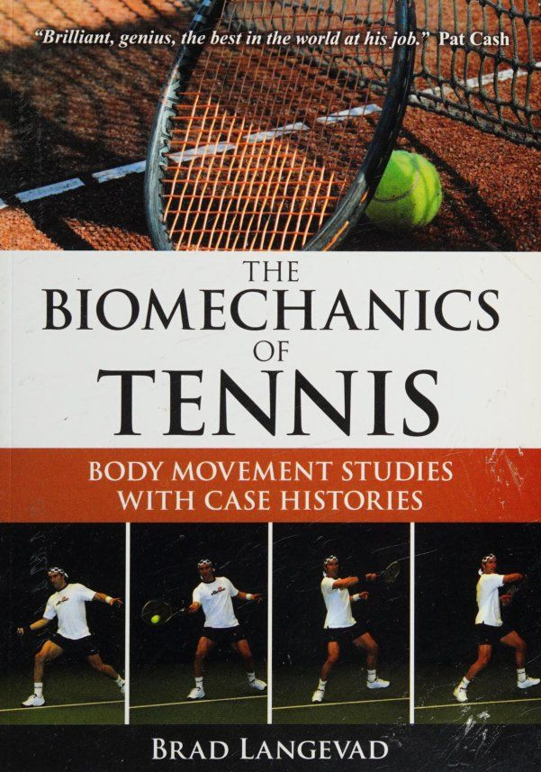
Công trình nghiên cứu cơ sinh học và phân tích động lực học đỉnh cao của chuyên gia Brad Langevad
Lời Tựa Của Pat Cash & Lời Mở Đầu
Wimbledon Champion Pat Cash reflection and Brad Langevad thesis on movement science — Góc nhìn chân thực từ nhà vô địch Wimbledon và tuyên ngôn về khoa học chuyển động thực chứng
Pat Cash: Quyết Định Sáng Suốt Nhất Trong Sự Nghiệp Đỉnh Cao
Tôi bắt đầu làm việc với Brad khoảng 20 năm trước. Thành thật mà nói, đó là động thái tốt nhất mà tôi từng thực hiện. Tôi đã học được những điều mà trước đây tôi chưa bao giờ thực sự hiểu được. Tôi đã khắc phục được hai điểm yếu lớn trong trò chơi của mình: cú thuận tay (forehand) và cú giao bóng của tôi.
Tôi chỉ ước rằng tôi đã biết những điều này sớm hơn trong sự nghiệp của mình. Nó chắc chắn cho phép tôi phục hồi sau chấn thương, đồng thời tiếp thêm sức mạnh cho trận đấu của tôi và tính nhất quán hơn nhiều. Điều này đã giúp tôi rất nhiều để tiếp tục thi đấu ở Champions Tour và có tính cạnh tranh cao hơn, vì các tay vợt ở Champions Tour đang ngày càng trẻ hơn qua mỗi năm.
Tôi chỉ ước mình có được thông tin này trong suốt sự nghiệp thi đấu chuyên nghiệp của ATP. Tôi thấy Brad thật tuyệt vời khi được làm việc cùng. Tôi sử dụng các nguyên tắc của Brad trong quá trình huấn luyện của riêng mình. Hãy lắng nghe và học hỏi là tất cả những gì tôi có thể nói!
Đây là cơ hội tuyệt vời để nhìn thấy tương lai của quần vợt. Pat tiền mặt
Cơ Sinh Học Đích Thực: Khoa Học Vận Động Tự Nhiên & Thiên Kiến Chuyển Động
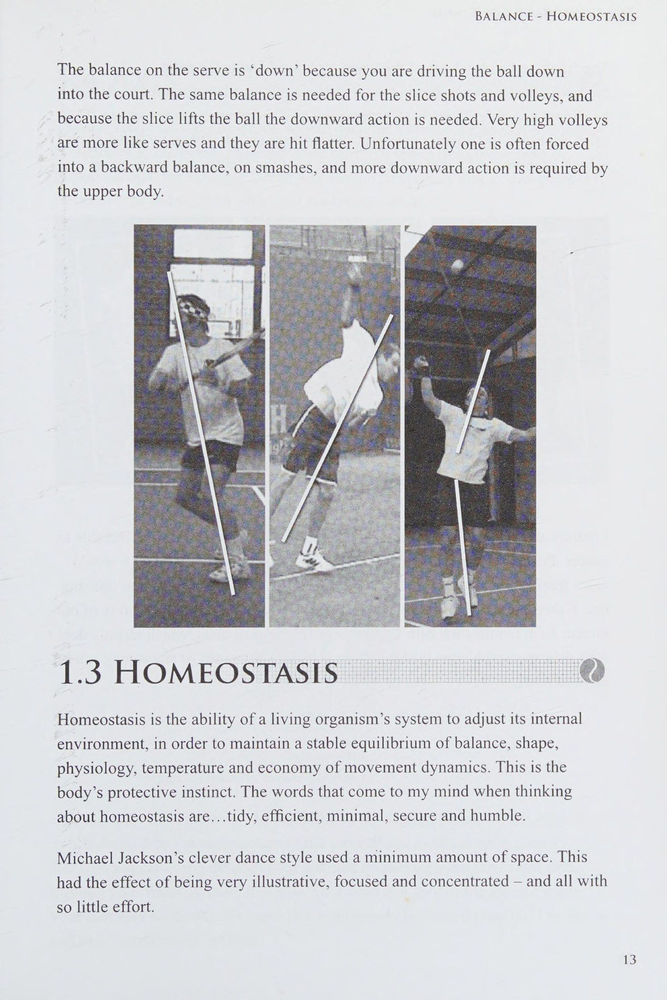
[English: Dynamic Balance & Homeostatic Axis Control in Modern Stroke Mechanics]
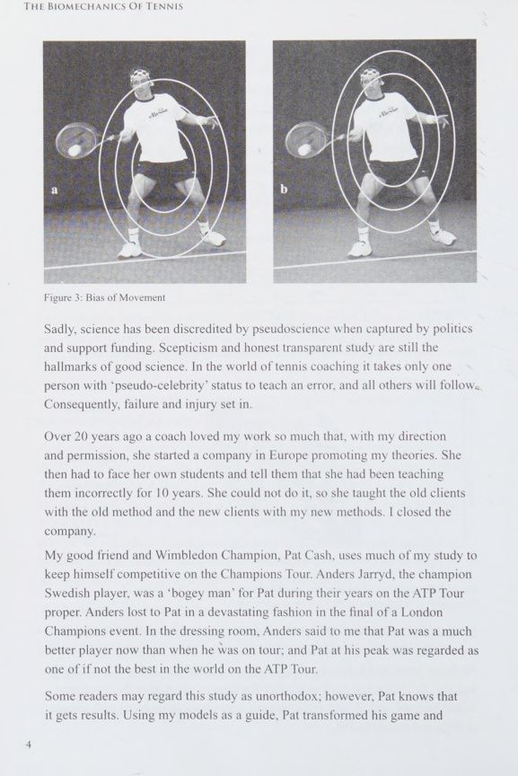
[English: The Bias of Movement and Torso-Initiated Kinetic Rotation]
Cuốn sách này là một nghiên cứu về cách luyện tập quần vợt được khuyến nghị sử dụng Khoa học Cơ sinh học. Nó được phát triển qua nhiều năm nghiên cứu và huấn luyện thực tế. Cơ sinh học không phải là khoa học robot mà là một phương pháp khoa học để kiểm tra chuyển động tự nhiên và điều chỉnh nó hướng tới một mục đích cụ thể, chẳng hạn như luyện tập quần vợt tốt. Nghiên cứu cũng đưa ra hành động khắc phục để tránh thương tích.
Mục đích của cuốn sách này là cung cấp cho huấn luyện viên và tay vợt những thông tin kỹ thuật thường quá khoa học đối với huấn luyện viên và vận động viên, trong các ấn phẩm khoa học thể thao. Ngược lại, không có gì lạ khi biết rằng nhiều huấn luyện viên và tay vợt thấy những cuốn sách huấn luyện truyền thống khá khập khiễng. Tôi hy vọng bạn thấy cuốn sách có nhiều thông tin, kích thích tư duy, tương đối dễ hiểu và thân thiện với người dùng trên sân tennis.
Đây là tập đầu tiên trong bộ sách về các môn thể thao khác nhau. Các tập khác trong bộ truyện hiện đang được xuất bản và sẽ sớm ra mắt. Cũng sẽ có một số lượng về tư thế làm việc và chấn thương.
Hãy luôn nhớ rằng thà không huấn luyện còn tốt hơn nhiều so với việc huấn luyện tồi. Nghiên cứu của tôi luôn chỉ ra rằng những hành động tốt nhất của các vận động viên vô địch là những hành động được phát triển một cách tự nhiên, không cần huấn luyện chính thức.
Đầu tiên, hãy nghiên cứu phần đề cập trực tiếp đến các nguyên tắc chuyển động cơ bản. Phần lớn phần này sử dụng Pat Cash và Andre Agassi làm mô hình và nghiên cứu trường hợp. Sau đó, các nghiên cứu trường hợp của nhiều người chơi khác nhau nhấn mạnh lại các phương pháp thực hành tốt và không tốt, đồng thời phác thảo khả năng chấn thương và hạn chế di chuyển.
Sẽ có các ấn bản sau, trong đó tôi sẽ đưa vào các phân tích về một số người chơi mới nổi, cùng với những người khác. Vui lòng gửi email bất kỳ đề xuất nào cho người chơi mà bạn muốn đưa vào các tập sau. (Bất kỳ hình ảnh và video nào mà bạn vui lòng chia sẻ sẽ được đón nhận vào bộ sưu tập của tôi với lòng biết ơn.) Phụ lục, xác định sự phát triển của các mô hình, giới thiệu một chút toán học. Nếu toán học không phải là sở trường của bạn thì hãy đọc lướt qua phần này. Bạn vẫn sẽ hiểu được các nguyên tắc chuyển động từ các nghiên cứu điển hình.
Những người đam mê sẽ tìm thấy các văn bản hữu ích khác liên quan đến cơ sinh học và sinh lý học trên internet và trong các thư viện trường đại học. Tuy nhiên, hiếm khi, đôi khi các thuật ngữ trong các văn bản này có thể được định nghĩa sai hoặc không chính xác. Ví dụ: biểu đồ sau đây (Hình 1) hiển thị tổng hợp các bộ phận, ngụ ý rằng chuyển động bắt đầu ở bàn chân - trong khi chuyển động bắt đầu từ trung tâm cơ thể. Biểu đồ tiếp theo (Hình 2) là biểu đồ tôi đã đơn giản hóa. Một biểu đồ chính xác hơn là rất phức tạp. Các đoạn cơ thể đã thay thế các khớp. Bạn sẽ gặp khó khăn nếu nghĩ đến các khớp tạo ra lực và quay bên trong chúng.
Hình 1: Cơ sinh học của chuyển động (Nguồn: http://www.coachr.org/biomechanics.htm) Hạ tay Hạ chân Hạ cánh tay trên Lực chân trên ——_______» Thân trên Thời gian thân dưới
Hình 2: Cơ sinh học của Chuyển động - được Brad Langevad đơn giản hóa và điều chỉnh từ (Nguồn: http://www.coachr.org/biomechanics.htm) Ngoài ra, do trọng lực và sự gắn kết của cơ thể với mặt đất thông qua bàn chân, chuyển động thiên về các phần thân dưới. Đây là lý do tại sao phần thân dưới, mặc dù chồng lên phần thân trên, lại bắt đầu xoay trước (Hình 2 và Hình 3a). Nếu Pat thực hiện cú thuận tay (forehand) này trong không gian thì chuyển động sẽ tập trung hơn, với phần thân dưới và phần thân trên cân bằng hơn về lực và thời gian (Hình 3b).
Hình 3: Xu hướng chuyển động Đáng buồn thay, khoa học đã bị giả khoa học làm mất uy tín khi bị chính trị và tài trợ hỗ trợ bắt giữ. Chủ nghĩa hoài nghi và nghiên cứu minh bạch trung thực vẫn là đặc điểm nổi bật của khoa học tốt. Trong thế giới huấn luyện quần vợt, chỉ cần một người có tư cách 'giả nổi tiếng' dạy lỗi và tất cả những người khác sẽ làm theo.
Hậu quả là thất bại và chấn thương xảy ra. Hơn 20 năm trước, một huấn luyện viên yêu thích công việc của tôi đến mức, với sự chỉ đạo và cho phép của tôi, cô ấy đã thành lập một công ty ở Châu Âu để quảng bá lý thuyết của tôi. Sau đó, cô phải đối mặt với chính học sinh của mình và nói với họ rằng cô đã dạy họ không đúng cách trong 10 năm. Cô ấy không làm được nên dạy khách hàng cũ theo phương pháp cũ và dạy khách hàng mới theo phương pháp mới của tôi. Tôi đóng cửa công ty.
Người bạn tốt của tôi và nhà vô địch Wimbledon, Pat Cash, sử dụng phần lớn kiến thức của tôi để duy trì khả năng cạnh tranh ở Champions Tour. Anders Jarryd, tay vợt vô địch người Thụy Điển, là 'thánh ma' đối với Pat trong những năm họ tham gia ATP Tour. Anders đã thua Pat một cách thảm hại trong trận chung kết của một sự kiện Champions London. Trong phòng thay đồ, Anders nói với tôi rằng Pat bây giờ là một tay vợt giỏi hơn nhiều so với khi anh ấy đi lưu diễn; và Pat ở thời kỳ đỉnh cao được coi là một trong những tay vợt xuất sắc nhất thế giới tại ATP Tour.
Một số độc giả có thể coi nghiên cứu này là không chính thống; tuy nhiên, Pat biết rằng nó sẽ có kết quả. Sử dụng các mô hình của tôi làm hướng dẫn, Pat đã biến đổi trò chơi của mình và
Hành Trình Tái Thiết Cú Đánh Tại Bermuda Cùng Pat Cash & Xóa Bỏ Giáo Điều
đã kéo dài sự nghiệp của mình bằng cách loại bỏ chấn thương. Anh ấy đã là một thế lực thống trị ở ATP Champions Tour. Tôi đã sử dụng những bức cú đánh Pat của mình cho mục đích so sánh xuyên suốt cuốn sách.
Pat Cash đến gặp tôi về cú thuận tay (forehand) và giao bóng của anh ấy. Đây là những yếu tố yếu nhất của anh ấy và khiến anh ấy đau buồn và tổn thương. Pat, gia đình anh ấy và tôi tới Bermuda trong ba tháng, và Pat thuê một căn nhà có Sân Sân đất nện. Pat và tôi làm việc hàng giờ mỗi sáng và chiều; đánh, quay phim, đánh lại và quay lại ở nhiệt độ thiêu đốt 100° F (38° C) và ẩm ướt nhỏ giọt. Chúng tôi nghiên cứu cảnh quay vào bữa sáng và buổi tối. Pat, chính là Pat, đã không ngừng cống hiến hết mình để sửa trò chơi của mình trước khi tiếp tục thi đấu trong các giải đấu. Anh ấy luôn 'bật' bất cứ khi nào được yêu cầu. Điều đó cần đến sự can đảm.
Sau khi chúng tôi sửa cú thuận tay (forehand) và giao bóng của Pat, anh ấy muốn xem xét Cú trái tay (backhand) tay của mình và các cú đánh khác. Pat Cash là một trong những vận động viên vô lê vĩ đại nhất, nếu không muốn nói là vận động viên vô lê vĩ đại nhất từ trước đến nay! Tôi đã phải nuốt cục nghẹn trong cổ họng khi nói với anh ấy rằng những cú vô lê của anh ấy có thể tốt hơn, vì tôi có thể cảm nhận được những sợi lông xù của anh ấy đang dựng lên. Nhưng anh ta đã nuốt nó, nhai nó và nhổ nó ra. Pat, người có những cú vô lê tuyệt vời như vậy, đã phải can đảm như thế nào để suy nghĩ lại về chúng. Mỗi chúng ta đều khác nhau và không ai trong chúng ta có thể hiểu được một cách trọn vẹn. Một số người có gen và hoàn cảnh khiến họ vô cùng khó khăn trong việc thử thách bản thân, tạo ra những thay đổi đáng kể với sự dũng cảm giống như một "Pat Cash". Chỉ cần cố gắng hết sức mình!
Đây không phải là cuốn sách được viết ra để chỉ trích các huấn luyện viên. Mọi bình luận có vẻ xúc phạm huấn luyện viên đều hoàn toàn nhắm vào những vấn đề mà tất cả huấn luyện viên và tay vợt đang gặp phải, do phương pháp giảng dạy chưa được nghiên cứu. Bắt đầu chơi quần vợt và trước khi tôi bắt đầu nghiên cứu ở trường đại học, tôi được huấn luyện bằng cách sử dụng những niềm tin kỳ lạ nhất. Lẽ ra tôi phải bị 'nhốt hắc ín' và bị bỏ tù suốt đời.
Tôi đã giao bóng cho tay vợt Junior hàng đầu ở Australia một cú giao bóng tồi tệ nhất, và anh ấy đã bỏ quần vợt. Sau đó, tôi mời anh ấy bữa tối và xin lỗi. Cũng không có ý định chọn các tay vợt chuyên nghiệp. Tôi nghĩ rằng việc phân tích những người chơi hàng đầu sẽ thú vị hơn đối với người đọc hơn là xem những người chơi chưa biết. Và người chơi câu lạc bộ nghiệp dư trung bình mắc nhiều lỗi về kỹ thuật hơn. Nó có thể trở nên khá xấu xí.
Xung quanh chúng ta là sách, tạp chí, báo chí, bình luận viên truyền hình, sách hướng dẫn huấn luyện, thành viên câu lạc bộ, bạn bè và gia đình, và tất cả đều muốn cho chúng ta biết mọi thứ trong quần vợt nên được thực hiện như thế nào. Hầu hết các LTA đều phát triển từ việc một số người cố gắng ngăn cản việc huấn luyện của những người khác, những người mà họ coi là kém cỏi. Có thể người này nói với người khác, 'Bạn có một cú thuận tay (forehand) tốt. Hãy biến nó thành kỹ thuật LTA của chúng ta.' Chúng ta có thể đáp lại bằng cách nói: 'Đừng phán xét, cho đến khi bạn tự phán xét mình'. Thật là bực bội, tôi thực sự muốn thấy sự Kết thúc cú đánh của 'con bò đực' tồn tại trong thế giới huấn luyện, nhưng tôi phải tha thứ vì tất cả chúng ta đều mắc sai lầm. Chúng ta hãy cố gắng làm cho đúng!
Đôi khi, giải pháp rõ ràng nhất cho một vấn đề không phải là giải pháp xuất hiện đầu tiên trong đầu và nhân loại có thể cải thiện đáng kể bằng cách nhìn 'bên ngoài chiếc hộp'. Trong các cuộc hội thảo của mình, tôi thấy rằng khoảng 33% người tham gia hiểu hoàn toàn, 33% hiểu phần nào và 33% không hiểu - mặc dù bằng chứng ở ngay trước mặt họ. Dù bạn thuộc loại nào, hãy kiên trì. Hãy để tâm trí của bạn vượt ra ngoài những phương pháp và niềm tin hiện tại của bạn.
Khi tôi chơi quần vợt xong, thất vọng vì chấn thương mãn tính và những cú đánh thiếu sót, tôi bắt đầu huấn luyện. Tôi đang thảo luận về một chủ đề nào đó liên quan đến cú giao bóng với một người bạn chơi quần vợt của tôi khi chúng tôi đang luyện tập. Anh ấy đã đưa ra một ý tưởng mà tôi cho là điên rồ. Những gì đã được dạy cho tôi về cú giao bóng trái ngược với lý thuyết của anh ấy, và tôi cực lực phản đối ý tưởng của anh ấy. Khoảng một tháng sau, tôi đã nhận được nó! Ý tưởng đó bây giờ là một trong những nguyên tắc trong cuốn sách này. (Để dễ so sánh, những người chơi thuận tay trái đã được phản ánh thành những người thuận tay phải.) Vài trang tiếp theo chứa một số tài liệu khoa học và toán học nặng nề. Những người uốn cong số, như tôi, sẽ thích nó. Nếu bạn có thể nắm bắt được càng nhiều môn Toán càng tốt, thì theo thời gian, bạn sẽ thấy mọi thứ khác dễ nắm bắt hơn rất nhiều.
Các nghiên cứu điển hình xuất hiện sau các nguyên tắc cơ bản và nội dung của chúng dễ hiểu hơn nhiều đối với vận động viên và người bình thường. Trong phần tiếp theo về các nguyên tắc cơ bản, Pat Cash và Andre Agassi là những trường hợp điển hình chính. Phần này chứa nhiều chi tiết hơn và do đó có một số nội dung nặng nề, chẳng hạn như mô tả các mặt phẳng của trục. Mọi việc sẽ trở nên dễ dàng hơn nhiều trong phần mô tả các nguyên tắc cơ bản liên quan đến nhiều vận động viên quần vợt chuyên nghiệp khác sau đây. Khi đọc qua từng nghiên cứu điển hình, bạn sẽ thấy rằng điều gì đó trước đây bạn chưa hiểu rõ giờ đã trở nên rõ ràng hơn. Đợi ở đó!
Vui lòng gửi email bất kỳ câu hỏi nào cho tôi tại: www.bradlangevad.net và bradlangevad@hotmail.com. Chúc bạn vui vẻ! Brad Langevad
Chương 1: Các Nguyên Lý Cơ Sinh Học Nền Tảng
The Nine Core Pillars: Position, Balance, Homeostasis, Axis, Rotation, Sequence, Zone, Spin, Injury — Hệ thống 9 trụ cột khoa học: Vị trí, Thăng bằng, Nội môi, Trục xoay, Chuỗi động học, Vùng tiếp xúc, Độ xoáy và Phòng ngừa chấn thương
1.1 Vị Trí: Góc Bàn Chân & Mối Tương Quan Với Đường Bóng (Position)
ver 20 năm trước, tôi bắt đầu nghiên cứu các góc cạnh của cơ thể. May mắn thay, tại Ce này. phần mềm đồ họa video máy tính đã được giới thiệu. Để so sánh các vận động viên, tôi đã phát triển quy trình so sánh hai hoặc nhiều người chơi, vào những thời điểm giống nhau, ở các phía khác nhau của màn hình. Phát minh này đã được nêu bật trên các chương trình truyền hình quốc tế: Sky Sports, CNN, BBC, Beyond 2000, How Do They Do That? và National Geographic, trong số những người khác.
'Màn hình chia nhỏ' cũng cung cấp một cách rõ ràng để minh họa các lĩnh vực cần cải thiện cho khách hàng. Phương pháp này cũng rất tuyệt vời khi hiển thị và so sánh kết quả 'trước' và 'sau' sau các buổi huấn luyện.
Về mặt cơ sinh học, cú thuận tay (forehand) là dễ bắt đầu nhất, vì vậy cú thuận tay (forehand) được mô tả rộng rãi và các cú đánh quần vợt khác được mô tả với ít ví dụ hơn. Nếu không thì tôi sẽ lặp lại chính mình, đặc biệt là về các nguyên tắc. Do đó, theo nhiều cách, các cú đánh quần vợt khác được mô tả là những biến thể của cú Cú thuận tay (forehand). Các nguyên tắc về cơ bản là giống nhau trong tất cả các cú đánh trong quần vợt và mọi hành động trong các môn thể thao khác.
1.1 VỊ TRÍ Vị trí của bàn chân quyết định mối quan hệ giữa tay vợt và sân thi đấu. Khi cơ thể quá 'hướng thẳng' về phía mục tiêu, điều đó sẽ khiến việc tiếp xúc dễ dàng hơn và ảnh hưởng một chút đến quá trình chuẩn bị. Nếu bạn quá thiên vị thì bạn sẽ thỏa hiệp trong việc liên lạc và ủng hộ việc chuẩn bị. Nếu bạn phải lựa chọn giữa việc quá thiên về phía trước hoặc quá trực tiếp, thì quá trực tiếp là mặt an toàn hơn của sự hoàn hảo. Nếu bạn cố gắng rửa bát hoặc bắt tay ai đó trong khi đứng nghiêng, bạn sẽ cảm thấy khá ngớ ngẩn và không hiệu quả. Tôi không biết ý tưởng 'phụ' đến từ đâu nhưng tôi nghi ngờ rằng ai đó đã sử dụng nó trong sách giáo khoa và những người khác chỉ sao chép.
Ngay cả những cú thuận tay (forehand) của những tay vợt vĩ đại (trước -1970) đều là những người trực diện: Bill Tilden, Bobby Riggs, Althea Gibson, Margaret Court, Billie Jean King, Rod Laver, Tony Roche và Evonne Goolagong Cawley. (Rod Laver có chuỗi cú đánh hoàn chỉnh nhất. Anh ấy là tay vợt tự nhiên nhất, về mặt kỹ thuật, trong trò chơi từ trước đến nay.) Tôi cũng sẽ bao gồm Tony Roche, Jim Courier, Pete Sampras, Ivan Lendl, Bjorn Borg và Marat Safin trong nhóm thuận tay ưu tú này. Trong những thập kỷ gần đây, Agassi đã tạo ra một trong những cú thuận tay (forehand) hay nhất mà chúng ta từng thấy. Vị trí của anh ấy thật tuyệt vời.
Bạn có thể tìm được một vị trí thích hợp nếu bạn thiết lập một số mục tiêu và tập hợp các cú thuận tay (forehand) với bạn mình. Nếu vị trí của bạn sai, hướng đi của bạn sẽ thất thường. Nếu bạn tìm được vị trí tốt thì hướng thuận tay của bạn sẽ gần như thẳng hàng với mục tiêu.
Trong bức ảnh bên dưới, bạn có thể thấy Margaret Court đã có một tư thế đặt chân tuyệt vời, tự nhiên như thế nào. Chắc chắn người ta sẽ cho rằng cô ấy sẽ có tay trái quá thấp, bởi vì vào thời đó, các tay vợt cầm quả bóng thứ hai bằng tay kia.
Vị trí trái tay hơi nghiêng về phía bên hơn so với thuận tay, do sự khác biệt trong các động tác vung vợt ra sau. Bàn chân cần phải thích ứng với thực tế là cánh tay đánh cần phải đi ngang qua cơ thể. Cú trái tay (backhand) tay hai tay yêu cầu vị trí ở phía trước nhiều hơn so với Cú trái tay (backhand) tay một tay, vì nó giống với cú thuận tay (forehand) hơn.
Vị trí của cú vô lê thuận tay, cú đập bóng smash và giao bóng theo các góc giống như cú thuận tay (forehand). Cú vô lê trái tay và trái tay có cùng một góc, và cú cắt trái tay và cú cắt thuận tay lần lượt là các cú vô lê trái tay và cú vô lê thuận tay một cách hiệu quả. Cú cú đập bóng smash thực sự là một cú giao bóng.
1.2 Thăng Bằng & 1.3 Cân Bằng Nội Môi (Balance & Homeostasis)
1.2 CÂN BẰNG Nguyên tắc cân bằng mô tả mối quan hệ giữa cơ thể và chiều cao của mục tiêu. Sự cân bằng phải vuông góc với độ cao dự định của hành động.
Sử dụng mục tiêu của mình trong thực tế, bạn có thể tìm thấy sự cân bằng lý tưởng của mình bằng cách quan sát xem mục tiêu của bạn ngắn hay dài. Sự cân bằng của Pat và Andre Agassi thật tuyệt vời. Họ không đánh với độ Xoáy lên quá cao và/hoặc cao qua lưới, vì vậy họ chỉ cần hơi ngả người về phía sau, như bạn có thể thấy trong các bức ảnh bên dưới.
Độ cân bằng khi giao bóng bị 'xuống' vì bạn đang đánh bóng xuống sân. Sự cân bằng tương tự là cần thiết cho các cú cắt và cú vô lê, và vì cú cắt nâng bóng lên nên cần có hành động đi xuống. Những cú vô lê rất cao giống như những cú giao bóng hơn và chúng được Cú đánh phẳng hơn. Thật không may, người ta thường bị buộc phải giữ Trọng tâm cơ thể về phía sau khi thực hiện các Cú đập trên đầu (smash) bóng và phần thân trên cần phải thực hiện nhiều động tác hướng xuống hơn.
1.3 Cân bằng nội môi (homeostasis) Cân bằng nội môi (homeostasis) là khả năng hệ thống của cơ thể sống điều chỉnh môi trường bên trong của nó, nhằm duy trì trạng thái cân bằng ổn định về sự cân bằng, hình dạng, sinh lý, nhiệt độ và tính kinh tế của động lực chuyển động. Đây là bản năng bảo vệ của cơ thể. Những từ hiện lên trong đầu tôi khi nghĩ về cân bằng nội môi (homeostasis) là...gọn gàng, hiệu quả, tối giản, an toàn và khiêm tốn.
Phong cách nhảy thông minh của Michael Jackson sử dụng ít không gian nhất. Điều này có tác dụng rất minh họa, tập trung và tập trung - và tất cả đều tốn rất ít nỗ lực. Hình dạng 'bắt tay' của cú thuận tay (forehand) cao đến thắt lưng là cú đánh có âm thanh cơ sinh học nhất trong quần vợt. Khi kỹ thuật trở nên tự nhiên, nó dường như gần như vô hình. Có sự nỗ lực, như thể người chơi không cố gắng. Chúng thường có vẻ “lơ lửng trong không gian”. Khi có những sai sót đặc trưng, có khả năng hiển thị cao và có cái nhìn về nỗ lực nhiều hơn, như thể các tay vợt đang 'cố gắng quá mức'.
Tôi tin rằng những người có vấn đề về tư thế, béo phì và chấn thương sẽ dễ bị ung thư. Từ quan điểm cân bằng nội môi (homeostasis), ở cấp độ vi tế bào, việc các tế bào phân chia một cách không tự nhiên để đẩy không gian mở ra có vẻ khả thi. Sau đó, một khối u có thể xuất hiện ở khu vực này. Toàn bộ hình dạng con người của chúng ta đòi hỏi sự chăm sóc của hàng tỷ tế bào riêng lẻ vốn đã giải quyết các vấn đề của chính chúng. Đẩy những tế bào này vào tình huống căng thẳng có thể khiến chúng nổi loạn.
1.4 Trục Chuyển Động: Ba Mặt Phẳng Xoay & Tọa Độ Toán Học 3D (Axis)
1.4 AxIS Thực sự không có cách nào đúng hay sai để mô tả mặt phẳng và trục quay. Ví dụ, đôi khi trong y học, các nhà giải phẫu học sử dụng các thuật ngữ khác với các thuật ngữ được sử dụng bởi các nhà cơ chế sinh học. Một số chỉ sử dụng nhãn X, Y và Z. Vấn đề là phải nhất quán và biết bạn đang nói về điều gì.
Vì mục đích của cuốn sách này, chuyển động quay quanh trục ngang sẽ được gọi là 'bên'. Hãy tưởng tượng một ngọn giáo xuyên qua đầu bạn và xuyên qua cơ thể bạn đến chân bạn. Cách duy nhất để bạn có thể xoay quanh trục này mà bản thân trục không chuyển động là quay quanh nó, giống như một vận động viên trượt băng đang quay tại một điểm. Nhìn vào hình bên dưới (Hình 3), trục ngang vuông góc với mặt phẳng ngang và nó được hình thành bởi giao điểm của mặt phẳng vành và mặt phẳng dọc.
(Từ tiếng Latin, sagitta, có nghĩa là 'mũi tên'.) Mặt phẳng Sagittal Mặt phẳng vành Mặt phẳng ngang Trục dọc Xoay theo trục dọc (longitudinal rotation) (Đầu qua ngón chân) Trục vành Xoay Mặt trước (Trái qua phải) (Phải qua trái) Trục ngang Xoay ngang (Trái quanh phải) (Phải quanh trái)
Hình 3: Mặt phẳng và trục quay Trục dọc là trục vuông góc với mặt phẳng dọc, tức là trục dọc được hình thành bởi giao điểm của mặt phẳng vành và mặt phẳng ngang.
Hãy tưởng tượng một ngọn giáo xuyên qua bên trái của bạn và đâm ra bên phải của bạn, xuyên qua thắt lưng của bạn. Xung quanh trục này, đầu của bạn có thể quay xuống đất trong khi chân bạn có thể quay lên trời. Bởi vì đây là chóp xoay khớp vai tiến/lùi, tôi thích gọi đây là sự xoay 'dọc' hơn.
Trục vành (hoặc trục trán) là trục vuông góc với mặt phẳng vành, tức là trục vành được hình thành bởi giao điểm của mặt phẳng dọc và mặt phẳng ngang. Hãy tưởng tượng một ngọn giáo xuyên qua bụng và lưng của bạn. Bạn có thể quay trái qua phải và phải qua trái quanh trục này. Và bởi vì bạn vẫn quay mặt về 'phía trước' nên tôi thích gọi đây là chóp xoay khớp vai 'phía trước'.
Trong quá trình chuẩn bị thuận tay của Agassi, cơ thể sẽ xoay theo chiều kim đồng hồ (khi nhìn từ trên xuống). Trong khi Cú thuận tay (forehand), thân bóng sẽ xoay nhẹ nhàng ngược chiều kim đồng hồ. Agassi thực hiện động tác này rất tốt, ngoại trừ việc va chạm nhẹ vào trục từ 'giật đầu gối' sang phải và lạm dụng cánh tay trái sẽ hạn chế khả năng xoay hoạt động hoàn hảo, quay lại tiếp xúc.
Xoay theo trục dọc (longitudinal rotation) ở phía thuận tay phải là chuyển động 'rơi về phía sau' khi bóng được nhấc qua lưới bằng Xoáy lên, ngoại trừ cú thuận tay (forehand) cắt được xoay xuống để hỗ trợ ý định hướng xuống của xoáy 'cắt'. Cú thuận tay phẳng chỉ có một chuyển động lùi nhẹ khi bóng được nhấc lên một chút. Agassi thực hiện động tác xoay theo chiều dọc một cách hoàn hảo ngoại trừ việc trục bị uốn cong nhẹ do phần dư của đầu gối trái về phía trước.
Việc xoay theo trục đứng ngang (frontal rotation) của người thuận tay phải là từ trái sang phải. Agassi thực hiện động tác xoay này cực kỳ tốt, ngoại trừ hành động đầu gối hướng xuống quá mức khiến trục di chuyển lên xuống quá mức, tạo ra một chút va chạm khi xoay.
Sử dụng các trục X, Y và Z để biểu thị các trục ngang, trục dọc và trục vành tương ứng, chúng ta có thể cho tọa độ X, Y và Z để biểu thị chiều cao, chiều rộng và chiều rộng, đồng thời chúng ta cũng có thể phát triển các công thức toán học cho các chuyển động này.
Chúng ta có thể sử dụng bất kỳ đơn vị đo nào tính từ tâm: milimét, centimet, mét, inch hoặc feet. Nếu chúng ta biểu thị điểm trung tâm của cơ thể, phía sau 'rốn' hoặc rốn, bằng 0 trên tất cả các trục, thì chúng ta có thể nói rằng tại 'thời điểm 1' (tl), đầu gối trái của Agassi có thể có chiều cao -60 đơn vị (dọc theo trục X), chiều rộng 6 đơn vị (dọc theo trục Y) và 6 đơn vị chiều rộng (dọc theo trục Z). Tại ‘thời điểm 2’ (t2), trọng tâm đầu gối trái di chuyển về tọa độ 70:7:-3(X/Y/Z). Khi chân duỗi thẳng và_ chiều cao tính từ 'rốn' tăng từ 60 lên 70 theo hướng âm (âm là 'xuống' và dương là 'lên' tính từ giữa cơ thể), đầu gối sẽ lùi lại (-Z) và sang trái (+ Y). Tại 'thời điểm 3' (t3), bạn có thể có tọa độ -65:8: -4.
Với một số điều chỉnh toán học, bạn có thể phát triển một công thức để mô tả vị trí đầu gối tại bất kỳ thời điểm nào như sau: aT = bX + cY + dZ. Với việc các trục thực sự chuyển động, chúng ta có thể muốn tính cả chuyển động này vào.
Với công thức dành cho mô hình, bạn có thể đánh giá khoảng cách, theo mỗi hướng, đầu gối của một tay vợt nào đó bị lệch khỏi vị trí.
1.5 Xoay Thân & 1.6 Chuỗi Động Học: Trình Tự Phát Lực & Sóng Cơ Bắp (Rotation & Sequence)
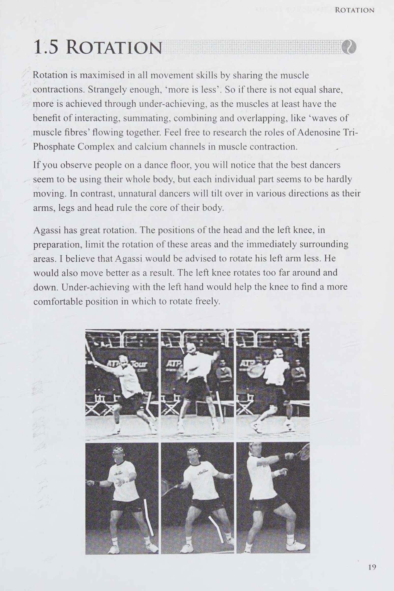
[English: Kinetic Chain Sequence and Muscle Wave Summation in Modern Groundstrokes]
1.5 ROTATION Xoay được tối đa hóa trong tất cả các kỹ năng chuyển động bằng cách chia sẻ các cơn co cơ. Thật kỳ lạ, 'nhiều hơn là ít hơn'. Vì vậy, nếu không có sự chia sẻ bằng nhau, thì sẽ đạt được nhiều hơn thông qua việc chưa đạt được thành tích cao, vì ít nhất các cơ cũng có được lợi ích khi tương tác, tổng hợp, kết hợp và chồng chéo, giống như 'các làn sóng sợi cơ' chảy cùng nhau. Hãy thoải mái nghiên cứu vai trò của Phức hợp Adenosine TriPhosphate và các kênh canxi trong sự co cơ.
Nếu bạn quan sát mọi người trên sàn nhảy, bạn sẽ nhận thấy rằng những vũ công giỏi nhất dường như sử dụng toàn bộ cơ thể của họ, nhưng từng bộ phận riêng lẻ dường như hầu như không chuyển động. Ngược lại, những vũ công không tự nhiên sẽ nghiêng người theo nhiều hướng khác nhau khi tay, chân và đầu của họ điều khiển phần cốt lõi của cơ thể.
Agassi có khả năng xoay người tuyệt vời. Để chuẩn bị, vị trí của đầu và đầu gối trái sẽ hạn chế khả năng xoay của các khu vực này và các khu vực xung quanh ngay lập tức. Tôi tin rằng Agassi sẽ được khuyên nên xoay cánh tay trái của mình ít hơn. Kết quả là anh ấy cũng sẽ di chuyển tốt hơn. Đầu gối trái xoay quá xa và hướng xuống. Việc đạt được thành tích thấp bằng tay trái sẽ giúp đầu gối tìm được vị trí thoải mái hơn để xoay tự do.
a Vn bat" 4 'Vị trí chờ' truyền thống có một số dấu chấm hỏi. Theo mặc định, 'vị trí chờ' ngụ ý rằng tay trái, đối với những cú thuận tay (forehand) phải, theo sau vợt khi chuẩn bị. Bạn có thể tưởng tượng rằng việc bắt tay ai đó, trong khi giữ hai tay lại với nhau, sẽ tạo ra một hình dạng 'co rút' cho hành động đó. Vùng ngực trái bị ép vào một khu vực 'bổ sung' cho ngực phải. Khi bạn bắt tay một cách tự nhiên, bạn sẽ đặt mình vào vị trí cánh tay trái thành một cánh tay trái di chuyển sang bên phải, không theo thiết kế cân bằng nội môi (homeostasis), có thể buộc việc xoay quanh trục thẳng đứng (lateral rotation) phải trở nên 'làm quá mức'.
Bạn cũng có thể thử chạy tới bóng bằng tay trái trên vợt; khi làm như vậy, bạn sẽ gặp khó khăn hơn nhiều so với việc bạn chạy tới bóng mà không đặt tay trái lên vợt. Ngoài ra, trong trường hợp này, bạn có thể cho phép chuyển động xoay của ngực được điều chỉnh một cách tự nhiên hơn bằng động tác vung tay ra sau của cánh tay phải. Tay cầm có thể dễ dàng rơi vào đúng vị trí mà không cần sự trợ giúp của tay không đánh. Rod Laver chưa hề được huấn luyện thực sự trước khi được siêu huấn luyện viên người Australia, Charlie Hollis, phát hiện. Laver không có 'vị trí chờ', và do đó anh ấy di chuyển tốt và không thể xoay người quá mức. (Xem những bức ảnh sau đây của Rod Laver thuận tay trái.) 1.6 TRÌNH TỰ Trong một thế giới lý tưởng, các sợi cơ chồng lên nhau trong một hành động đẩy và kéo giống như sóng; tổng hợp các phần. Thứ tự của dòng chảy phải như sau:
bụng, ngực trên, cẳng chân; mông, cánh tay trên, cẳng chân, cánh tay dưới. Bạn có thể quan sát điều này khi bạn trèo lên cây. Khi đi lên cành tiếp theo, bạn có thể quan sát bộ phận nào trên cơ thể chuyển động trước. Trình tự của Agassi bị can thiệp nhẹ ở vùng chân-đầu gối trái.
Một vũ công sành điệu dường như sẽ chuyển động uyển chuyển, như thể mọi bộ phận cơ thể đều được kết nối với nhau. Một vũ công kém phong cách sẽ xuất hiện giật cục. Chân và tay của họ dường như sẽ phải nỗ lực nhiều hơn, kéo lê cơ thể xung quanh như thể bị ngắt kết nối. Với trọng tâm của cơ thể bị ném xung quanh, chúng sẽ mất Trọng tâm cơ thể.
1.7 Vùng Tiếp Xúc: Góc Vàng Bắt Tay 135° & Cơ Chế Thoát Vùng (Zone)
1.7 ZONE Điều này có thể được giải thích dễ dàng bằng một cái bắt tay, xảy ra một cách tự nhiên ở góc cánh tay khoảng 135 °. Góc này xảy ra thông qua mọi hành động ở mọi bộ phận cơ thể trong mọi môn thể thao; một con số tiềm năng cho ý nghĩa của cuộc sống. Những góc độ này cũng xảy ra trong toàn bộ vương quốc động vật. Nếu cánh tay dang rộng, bạn có thể cảm thấy căng ở cơ delta ở vai. Nếu cánh tay quá 'uốn cong' thì cánh tay dưới sẽ bị căng. Bạn cũng sẽ không đứng quá xa về bên trái hoặc quá xa về bên phải khi 'bắt tay'.
Các bộ phận cơ thể phải có đủ không gian nhưng cũng phải đủ nhỏ gọn. Các bộ phận đang đi vào vùng khi các bộ phận khác di chuyển ra ngoài. Bạn không nên cố gắng đặt tất cả các bộ phận cơ thể vào cùng một khu vực cùng một lúc. Hiện tượng này thể hiện rất rõ ràng ở những cú thuận tay (forehand) quá “ngang” và tất cả những cú đánh thiếu sót khác.
Đầu của Agassi lẽ ra đã bắt đầu rời khỏi khu vực tiếp xúc, nhưng nó bị 'kẹt' trong khu vực đó, và khiến khu vực tiếp xúc hơi 'chật chội'. Việc giao bóng vào cơ thể anh ta, ở phía thuận tay, sẽ mang lại cho đối thủ một số phần thưởng.
Vùng tiếp xúc ở bên trái tay ở phía trước nhiều hơn và gần cơ thể hơn, từ trái sang phải, so với bên thuận tay. Cú Cú trái tay (backhand) bằng hai tay được đánh về phía sau nhiều hơn so với cú đánh bằng một tay và xa cơ thể hơn, từ trái sang phải, nhưng gần hơn so với cú Cú thuận tay (forehand). Sai lầm lớn nhất là đánh cú thuận tay (forehand) quá gần và quá xa về phía trước, và đánh Cú trái tay (backhand) tay quá xa tâm cơ thể.
1.8 Độ Xoáy, Bảng Ma Trận Động Lực Học & 1.9 Điểm Nóng Chấn Thương (Spin & Injury)
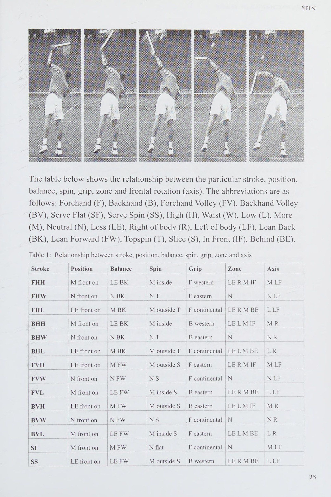
[English: Relationship Between Stroke, Position, Balance, Spin, Grip, Zone and Axis]
| Cú đánh (Stroke) | Vị trí chân (Position) | Thăng bằng (Balance) | Độ xoáy (Spin) | Cán cầm (Grip) | Vùng tiếp xúc (Zone) | Trục xoay (Axis) |
|---|---|---|---|---|---|---|
| FHH (Thuận tay bóng cao) | Mở nhiều (M front on) | Hơi ngả sau (LE BK) | Topspin trong (M inside T) | Viễn tây (Western) | Hơi lệch phải, trước (LE RM IF) | Nghiêng trái nhiều (M LF) |
| FHW (Thuận tay ngang sườn) | Trung hòa (N front on) | Ngả sau chuẩn (N BK) | Topspin chuẩn (N T) | Phương đông (Eastern) | Chuẩn (N) | Nghiêng trái chuẩn (N LF) |
| FHL (Thuận tay bóng thấp) | Hơi nghiêng (LE front on) | Ngả sau nhiều (M BK) | Topspin ngoài (M outside T) | Continental (Búa) | Hơi lệch phải, sau (LE RM BE) | Nghiêng trái ít (L LF) |
| BHH (Trái tay bóng cao) | Mở nhiều (M front on) | Hơi ngả sau (LE BK) | Topspin trong (M inside T) | Trái tay Western | Hơi lệch trái, trước (LE LM IF) | Nghiêng phải nhiều (M R) |
| BHW (Trái tay ngang sườn) | Trung hòa (N front on) | Ngả sau chuẩn (N BK) | Topspin chuẩn (N T) | Trái tay Eastern | Chuẩn (N) | Nghiêng phải chuẩn (N R) |
| BHL (Trái tay bóng thấp) | Hơi nghiêng (LE front on) | Ngả sau nhiều (M BK) | Topspin ngoài (M outside T) | Continental (Búa) | Hơi lệch trái, sau (LE LM BE) | Nghiêng phải ít (L R) |
| FVH (Volley thuận bóng cao) | Hơi nghiêng (LE front on) | Đổ trước nhiều (M FW) | Xoáy cắt ngoài (M outside S) | Thuận tay Eastern | Hơi lệch phải, trước (LE RM IF) | Nghiêng trái nhiều (M LF) |
| FVW (Volley thuận ngang ngực) | Trung hòa (N front on) | Đổ trước chuẩn (N FW) | Xoáy cắt chuẩn (N S) | Continental (Búa) | Chuẩn (N) | Nghiêng trái chuẩn (N LF) |
| FVL (Volley thuận bóng thấp) | Mở nhiều (M front on) | Hơi đổ trước (LE FW) | Xoáy cắt trong (M inside S) | Trái tay Eastern | Hơi lệch phải, sau (LE RM BE) | Nghiêng trái ít (L LF) |
| BVH (Volley trái bóng cao) | Hơi nghiêng (LE front on) | Đổ trước nhiều (M FW) | Xoáy cắt ngoài (M outside S) | Trái tay Eastern | Hơi lệch trái, trước (LE LM IF) | Nghiêng phải nhiều (M R) |
| BVW (Volley trái ngang ngực) | Trung hòa (N front on) | Đổ trước chuẩn (N FW) | Xoáy cắt chuẩn (N S) | Continental (Búa) | Chuẩn (N) | Nghiêng phải chuẩn (N R) |
| BVL (Volley trái bóng thấp) | Mở nhiều (M front on) | Hơi đổ trước (LE FW) | Xoáy cắt trong (M inside S) | Thuận tay Eastern | Hơi lệch trái, sau (LE LM BE) | Nghiêng phải ít (L R) |
| SF (Giao bóng phẳng Flat) | Mở nhiều (M front on) | Đổ trước nhiều (M FW) | Phẳng hoàn toàn (N flat) | Continental (Búa) | Chuẩn (N) | Nghiêng trái nhiều (M LF) |
| SS (Giao bóng xoáy Spin) | Hơi nghiêng (LE front on) | Hơi đổ trước (LE FW) | Xoáy cắt ngoài (M outside S) | Trái tay Western | Hơi lệch phải, sau (LE RM BE) | Nghiêng trái ít (L LF) |
1.8 SPIN Nguyên tắc này mô tả các biến thể của cú đánh 'phẳng', từ đó mô tả ý định của hành động. Nguyên tắc này liên quan nhiều đến góc của Mặt vợt và cách cầm vợt được sử dụng. Agassi sử dụng kiểu cầm vợt 'bán tây' lý tưởng cho những cú đánh 'cao ngang sườn'. Lý tưởng nhất là người chơi nên chuyển sang cách cầm vợt 'tây' hơn để có những cú đánh cao hơn và sang cách cầm vợt 'hướng đông' hoặc 'lục địa' hơn để có những cú Cú thuận tay (forehand) thấp hơn. Agassi chủ yếu sử dụng vừa đủ 'topspin' để giúp đưa bóng xuống sân. Ông sử dụng nguyên tắc 'khoảng cách ngắn nhất giữa hai điểm là một đường thẳng'. Khi áp dụng 'topspin' và duy trì chuyển động tròn nhịp nhàng, Mặt vợt nên bắt đầu đóng, mở khi tiếp xúc và sau đó đóng lại sau khi tiếp xúc. Agassi thực hiện điều này một cách hoàn hảo.
Đôi khi, khi các tay vợt chuyên nghiệp cần chạy thuận tay rộng và thấp, họ cần vung người lên ở bên ngoài bóng để nâng bóng lên qua lưới một cách có kiểm soát. Đầu vợt sẽ Kết thúc cú đánh ở cùng phía của thân vợt với điểm tiếp xúc. Cú giao bóng xoáy tuân theo nguyên tắc giống hệt nhau, ngoại trừ việc người chơi đang điều khiển hành động xoáy xuống chứ không phải lên. Đây là hai hành động tương tự nhau ngoại trừ việc chúng là hình ảnh 'lộn ngược' và 'từ sau ra trước' của chính chúng. Những người chơi chuyên nghiệp đôi khi sử dụng cách cầm vợt thuận tay nhẹ; giao bóng để tạo ra một cú giao bóng 'từ trong ra ngoài'. Cú giao bóng này khó có thể giữ được nhưng nếu đi vào, nó có lực đáng kể và trượt khỏi sân; cú đánh này cũng gần giống với cú thuận tay (forehand) hoặc trái tay 'từ trong ra ngoài' cao.
Boris Becker đôi khi sử dụng cú giao bóng này để 'trượt' một cú giao bóng mạnh ra phạm vi sân 'quảng cáo'. Pat Cash sử dụng nó như một chiến thuật bất ngờ. Người quay lại gặp khó khăn khi chọn nó trừ khi họ nhận thấy cách cầm nắm mà người giao bóng đang sử dụng.
Cú giao bóng 'đá' là một huyền thoại. Chỉ có những cú giao Cú đánh phẳng và xoáy. Cú giao bóng của bạn sẽ bị hủy nếu bạn cố gắng đánh vào mặt sau của quả bóng bằng một cây vợt nằm ngang. Bạn sẽ không bao giờ có thể đưa bóng chạm sân một cách nhanh chóng, đạt được bất kỳ góc độ nào hoặc thiết lập bất kỳ chuyển động nào trong không khí hoặc khi nảy.
(Xem hành động xoáy giao bóng của Greg Rusedsk1, hình bên dưới.) Bảng dưới đây cho thấy mối quan hệ giữa cú đánh, vị trí cụ thể như sau: Thuận tay (F), Trái tay (B), Vô lê thuận tay (FV), Vô lê trái tay (BV), Giao Cú đánh phẳng (SF), Xoay giao bóng (SS), Cao (H), Eo (W), Thấp (L), Nhiều (M), Trung lập (N), Ít hơn (LE), Bên phải cơ thể (R), Bên trái cơ thể (LF), Nghiêng lưng (BK), Nghiêng về phía trước (FW), Topspin (T), Slice (S), Phía trước (IF), Phía sau (BE).
Bảng 1: Mối quan hệ giữa hành trình, vị trí, độ cân bằng, độ xoáy, độ bám, vùng và trục | Vị trí hành trình _ | Số dư 23 "Spin Ee )Gnp| Vùng : | Trục 'FHH _Mffonton |LEBK | Minside | Fwestem
LERMIF | MLFFHW_ | N phía trước trên BK — = el Tae Sy | F đông _ N | NLF |LE mặt trận |MBK | Moutside T | F lục địa |LERMBE = LLF|BHH —|Mfronton |LEBK | Bên cạnh _| B miền tây_ te LMIF ss |Nfronton |NBK _____ B miền đông:
TRONG - | NR | LE phía trước |M BES 'ah M bên ngoài T | F lục địa LELMBE |LR LE mặt trận |_MFW _ MoutsideS_Feasten =|LERMIF | MLF VW Nffonton, NFW NS _—__Feontinental_N Mfronton | LEFW | MinsideS phía đông
LERMBE |LLF BYH _ LE phía trước _|M FW _M bên ngoài SB phía đông | LELMIF | MR _|N phía trước = |NFW | INS _F lục địa \N | NS __M phía trước trên [LEEW | M bên trong S | F đông | LELMBE |M tiền tuyến |MFW _ | N phẳng | F lục địa M LF LE mặt trận | LE FW M bên ngoài S_| B phương Tây | LERMBE |LLF Bảng này rất chung chung, vì có vô số biến thể về chiều cao và vô số tay cầm, đồng thời có nhiều biến thể. Ví dụ: nếu một tay vợt thấy mình bị căng cao và rộng trong cú vô lê trái tay, tức là họ không thể xác định được vị trí của mình phía sau quả bóng và họ muốn 'cắt' bóng mạnh và ngắn, Đánh chéo sân (cross-court), họ nên sử dụng cách cầm vợt thuận tay 'phương Tây'.
Bạn có thể thấy thú vị với bảng này bằng cách thử nghiệm với tất cả các kết hợp vô hạn có thể trở nên rõ ràng trong các trường hợp khác nhau. Ví dụ: nếu bạn thay đổi một ô trong bảng ở cột vị trí hoặc cột liên hệ thì những thay đổi nào cần có ở các ô bảng khác?
Chiếc bàn cũng có thể được xem xét dưới dạng mặt đồng hồ, trong đó các ảnh đối diện nhau trên mặt đồng hồ thường có thiết kế đối lập nhau nhưng chúng được thực hiện bằng cách sử dụng tay cầm tương tự. Đây là lý do tại sao một tay vợt có kiểu cầm cú volley thuận tay 'phương đông' có thể thành công với những cú vô lê thuận tay cao và những cú vô lê trái tay thấp nhưng lại gặp khó khăn với những cú vô lê trái tay cao và những cú vô lê thuận tay thấp. Bạn có thể nói rằng cú vô lê thuận tay là lúc 10 giờ và cú vô lê trái tay thấp là lúc 4 giờ.
Bạn có thể thấy thú vị với ý tưởng này. Nếu bạn thử thực hiện cú vô lê thuận tay giữa _ hai chân của mình, bạn sẽ phát hiện ra rằng cú đánh này sẽ dễ dàng hơn nếu bạn nghiêng sang trái (chân phải lên khỏi mặt đất), sử dụng cách cầm trái tay kiểu “phương Tây”, tiếp xúc phía sau hai chân và ngả người ra sau: bạn sẽ thấy đây là một cú đánh dễ dàng. Bây giờ, nếu bạn đặt bàn chân của mình trở thành đầu và lộn ngược cơ thể, bạn đang tiến gần đến một hành động giao bóng xoáy. Hơn nữa, nếu bạn thực hiện một số sửa đổi đối với hình dạng ban đầu, bây giờ bạn có thể chạy trở lại hàng rào phía sau và thực hiện một cú đánh lừa mù giữa hai chân của bạn trở lại sân. Vì vậy, sử dụng vị trí 12 giờ và 6 giờ (trên mặt đồng hồ), với một vài khúc cua ở đây và ở đó, chúng ta có thể thấy rằng cú vô lê giữa hai chân, cú giao bóng và cú đánh giữa hai chân được thực hiện trong khi quay mặt về hướng khác đều thuộc cùng một họ các cú đánh. Vui vẻ không? Não của tôi đôi khi đau khi làm những việc này. Thưởng thức!
1.9 TỔN THƯƠNG Tìm kiếm 'điểm nóng' chấn thương liên quan đến việc tìm kiếm các lĩnh vực mâu thuẫn. Cổ và đầu gối trái sẽ là khu vực mà Agassi quan tâm. 1.10 COACHING Nguyên tắc này nói rằng, 'Chà, chúng ta bắt đầu khắc phục nó từ đâu?' Huấn luyện đòi hỏi một chút thời gian suy nghĩ để quyết định khía cạnh chính nào sẽ có tác động tích cực nhất đến tất cả các vấn đề khác; như xảy ra khi các quân domino trong một hàng đều đổ xuống sau khi quân đầu tiên chạm quân tiếp theo, v.v.
Việc bỏ tay trái ra khỏi vợt sớm hơn một chút có thể hạn chế việc xoay đầu gối trái và cũng có thể giúp điều chỉnh góc đầu. Khi đó cú thuận tay (forehand) của Aggasi này sẽ là bất khả chiến bại. Tôi biết rằng thật khó để tưởng tượng rằng một trong những cú thuận tay (forehand) vĩ đại nhất của thế hệ này có thể tốt hơn, nhưng sự cống hiến chỉ là vấn đề của trí tưởng tượng. Nhiều năm trước, không ai có thể tưởng tượng được số điểm hoàn hảo là 10 trong môn thể dục dụng cụ hoặc lướt sóng, nhưng cả hai đều đã đạt được. Hãy tưởng tượng những cú đánh quần vợt thuần túy có thể trở nên như thế nào sau 50 năm nữa, để các chuyên gia quần vợt kiếm sống.
Chương 2: Cơ Sinh Học Cú Thuận Tay - Mô Hình Nền Tảng
Core Forehand Model, the 135-degree Handshake Angle, and Cash vs Agassi Case Study — Quy chuẩn động học, góc giải phẫu vàng 135° và phân tích kinh điển giữa Andre Agassi & Pat Cash
Mô Hình Cú Thuận Tay Chuẩn Mực: Động Học Của Cú Đánh Đỉnh Cao
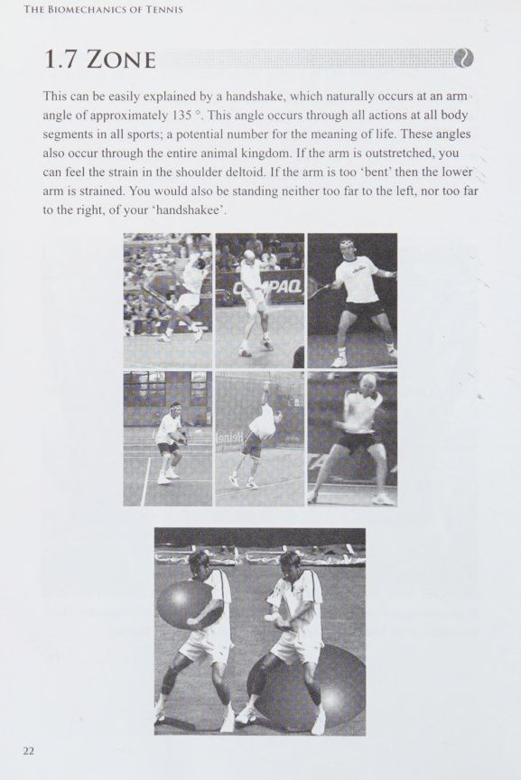
[English: The Optimal Forehand Kinetic Model and Arm-Torso Alignment]
Cú đánh thuận tay (forehand) hiện đại là sự tổng hòa tinh tế giữa ba mặt phẳng xoay: mặt phẳng đứng ngang (coronal plane - chuyển động nghiêng trái/phải), mặt phẳng đứng dọc (sagittal plane - chuyển động ngả trước/sau), và mặt phẳng nằm ngang (transverse plane - chuyển động xoay quanh trục thẳng đứng). Để tạo ra một cú thuận tay vừa có vận tốc bóng hủy diệt, vừa đạt độ xoáy cắm sân chính xác mà không gây tổn hại cho khớp khuỷu hay cổ tay, toàn bộ cấu trúc cơ thể phải tuân thủ nghiêm ngặt mô hình thăng bằng động.
Mô hình thuận tay tối ưu đòi hỏi góc tạo bởi cánh tay và cẳng tay tại thời điểm tiếp xúc bóng phải dao động tiệm cận góc vàng 135 độ — đây chính là góc giải phẫu học tự nhiên mà con người sử dụng khi đưa tay bắt một vật thể trong không gian hoặc khi bắt tay một người đối diện. Khi góc này bị duỗi thẳng quá mức (180 độ) như ở một số tay vợt lầm tưởng về khái niệm 'cánh tay thẳng tuyệt đối', toàn bộ chấn động từ mặt vợt sẽ truyền thẳng vào gân cơ chóp xoay khớp vai (rotator cuff). Ngược lại, nếu tay gập quá sát thân mình (dưới 90 độ), vùng tiếp xúc bóng bị bó nghẹt khiến chuỗi động học bị ngắt quãng, buộc cổ tay phải gập giật đột ngột.
Chuyển động xoay của thân trên (upper torso) và hông (pelvis) cần được dẫn dắt bởi sự thăng bằng nội môi (homeostasis). Ở giai đoạn chuẩn bị, thân người xoay mở theo chiều kim đồng hồ quanh trục thẳng đứng. Khi bước vào pha tăng tốc đập bóng, trọng tâm cơ thể thực hiện một chuyển động ngả nhẹ về phía sau (falling back) theo trục dọc để nâng quỹ đạo bóng vượt qua mép lưới với độ xoáy cuộn (topspin), đồng thời cho phép phần thân bên trái xoay thoát ra khỏi vùng tiếp xúc để giải phóng hoàn toàn không gian cho cánh tay phải vung tới.
Phân Tích Đối Chiếu Chuyên Sâu: Cú Thuận Tay Của Andre Agassi & Pat Cash
Andre Agassi sở hữu một trong những cú thuận tay chuẩn mực và sạch sẽ nhất trong lịch sử quần vợt chuyên nghiệp. Agassi sử dụng cán cầm bán viễn tây (semi-western grip) lý tưởng cho các đường bóng ngang tầm mạng sườn. Khi tiếp xúc bóng, mặt vợt của Agassi bắt đầu từ trạng thái hơi khép nhẹ, mở vuông góc chính xác tại điểm va chạm, và sau đó khép tự nhiên theo quỹ đạo cung tròn hoàn hảo. Ông khai thác triệt để định lý 'khoảng cách ngắn nhất giữa hai điểm là một đường thẳng' để đánh bóng cực sớm ngay khi bóng vừa nảy khỏi mặt sân.
Tuy nhiên, dưới lăng kính cơ sinh học độ phân giải cao, ngay cả cú đánh của Agassi cũng tồn tại những xung đột trục cơ thể thú vị. Tại thời điểm chuẩn bị, đầu gối trái của Agassi có xu hướng xoay gập xuống và ép quá sâu về bên phải, tạo ra một 'cú giật trục' (axis bump) làm thay đổi đột ngột tọa độ trọng tâm từ (-60, 6, 6) sang (-70, 7, -3). Đồng thời, cánh tay trái của ông vung hỗ trợ hơi quá mức, tạo lực cản kìm hãm sự xoay thông thoáng của ngực trái. Nếu Agassi tiết giảm độ vung của cánh tay trái, đầu gối của ông sẽ tự do hơn và cú đánh sẽ đạt độ thanh thoát phi thường.
Ngược lại, Pat Cash khi đến với Brad Langevad từng gặp khủng hoảng nghiêm trọng với cú thuận tay do thói quen bẻ cổ tay ép bóng và tư thế đứng nghiêng người (side-on) quá cứng nhắc theo lối dạy cổ điển. Bằng việc tái cấu trúc góc đặt bàn chân mở hơn, giữ trục cổ đầu ổn định và thiết lập góc bắt tay 135 độ tại điểm tiếp xúc, Pat Cash đã loại bỏ hoàn toàn các cơn đau cổ tay mãn tính và biến cú thuận tay từ điểm yếu chết người thành vũ khí uy lực giúp ông áp đảo toàn bộ các huyền thoại trên ATP Champions Tour.
Chương 3: Hồ Sơ Cơ Sinh Học Cú Thuận Tay Của Các Nhà Vô Địch
Detailed Nine-Pillar Kinematic Breakdowns of 20 ATP and WTA Champions — Khảo sát cơ học chi tiết của 20 ngôi sao hàng đầu ATP & WTA qua hệ tiêu chí 9 nguyên lý chuyển động
Tomas Berdych: Góc Chân Đứng Quá Nghiêng & Sự Bó Buộc Khung Chậu
2.1 TOMAS BERDYCH
Vị trí: Tomas Berdych đặt chân quá thuận. Điều này sẽ ảnh hưởng đến khả năng tìm ra hướng đi cần thiết của anh ta trước tòa. ròng hoặc dài.
Cân bằng nội môi (homeostasis): Khả năng bảo vệ và sử dụng không gian của anh không quá tệ ngoại trừ việc hình dáng và không gian của cơ thể anh hướng về phía trọng tài.
Trục: Với phía bên trái không thông suốt, trục ngang và trục vành bị cản trở.
Xoay: Chân và tay trái không thể xoay nhiều.
Trình tự: Tay phải 'nghẹt thở' đầu bộc lộ sự mất mát ở phần cơ thể 'tinh thần đồng đội'.
Xoay: Anh ấy có khả năng cầm vợt tốt cho cú thuận tay (forehand) cao đến thắt lưng này.
Chấn thương: Đầu gối trái có khả năng sẽ bị 'va chạm' trước.
Huấn luyện: Tập tay trái. Nếu điều này không ngăn được bàn chân quay khỏi sân thì tiếp theo hãy tấn công vào vị trí của bàn chân. Hy vọng rằng điều này cũng sẽ làm thẳng trục.
Marin Cilic: Xung Đột Giữa Thân Trên - Thân Dưới & Hẹp Vùng Đón Bóng
2.2 MARAN CILIC
Vị trí: Góc của bàn chân cũng có thể được sử dụng để mô tả mối quan hệ giữa đấu thủ và sân. Cú thuận tay của Cilic có mối quan hệ tốt hơn với đường biên bên phải của anh ta hơn là với sân. Đánh Đánh chéo sân (cross-court) với độ chính xác và tốc độ sẽ rất khó khăn.
cơ thể. Nếu phần thân dưới tiếp quản, bóng sẽ đi vào lưới; nếu phần thân trên chiếm ưu thế, bóng sẽ đi xa. Cilic phải quản lý những xung đột này khi anh ta đánh một cú thuận tay (forehand), anh ta sẽ cảm thấy lo lắng liên quan đến sự không chắc chắn.
Ở những điểm rất quan trọng, khi áp lực tăng lên, sẽ là khôn ngoan nếu Cú thuận tay (forehand) của anh ta. Sự lo lắng làm tăng thêm sự căng cơ ở những vùng dễ bị tổn thương.
Cân bằng nội môi (homeostasis): Cân bằng nội môi (homeostasis) có thể được xem xét dưới góc độ 'không gian'. Ví dụ: bạn có thể đứng trên một vách đá và duỗi một chân ra khỏi 'điểm rơi'. Chân cảm thấy không được bảo vệ khỏi cơ thể khi nó tách ra khỏi trung tâm cơ thể và bản thân cơ thể cũng cảm thấy nguy hiểm. Hãy mở rộng suy nghĩ này đến chỗ đậu xe.
Có thể nói rằng hông phải của Cilic đã đậu quá xa lề đường và hông trái quá xa so với dòng xe cộ. Để các cơ trên cơ thể cảm thấy thoải mái, hiệu quả và được bảo vệ, không gian cần không quá nhỏ cũng không quá lớn, đồng thời vẫn giữ được tính đối xứng. Chúng ta được cung cấp một không gian lý tưởng để thực hiện các động tác khác nhau. Ví dụ, khi trèo cây, bạn phải dùng thân cây để di chuyển cánh tay của mình theo nó, sau đó đưa chân vào không gian 'mới'.
Trục: Tất cả các trục đều bị xâm phạm.
Xoay: Đối với người thuận tay phải, phần bên trái của cơ thể nên di chuyển trước. Nó phải giải phóng không gian để cho phép bên phải vào và rời khỏi khu vực. Tay trái xoay trước tay phải, đùi trái trước đùi phải, v.v. Phía bên trái của Cilic rất cứng và điều này không chỉ hạn chế khả năng xoay của nó mà còn ngăn cản phía bên phải đi vòng quanh.
Trình tự: Hãy tưởng tượng một vận động viên trượt băng đang quay. Xung lượng góc đạt được nhờ sự đóng góp của tất cả các đoạn cơ thể. Trình tự của Cilic đã bị phá vỡ ngay từ đầu. Ngay cả vùng bụng, được minh họa bằng đường hông, cũng không thể hoạt động tốt. Lồng ngực bị cản trở, thể hiện qua việc cánh tay trái không thể cử động được.
Zone: Bởi vì cơ thể của Cilic không được thông thoáng đầy đủ nên cánh tay của anh ấy bị ép vào quá gần. Bất cứ khi nào cánh tay quá gần cơ thể, lực tiếp xúc sẽ bị đẩy quá xa về phía trước. Giao bóng bằng tay thuận tay sẽ gây ra một số lỗi 'miễn phí'.
Xoay: Cilic nên thay đổi cách cầm vợt của mình theo hướng cầm vợt 'hướng đông' hoặc 'lục địa' hơn cho cú thuận tay (forehand) thấp hơn một chút này. Trao cho anh ta những cú thuận tay (forehand) thấp sẽ buộc anh ta tạo ra Xoáy lên quá mức khi anh ta cố gắng mở ra một Mặt vợt cực kỳ khép kín, gây ra bởi cách cầm vợt 'phương Tây' của anh ta. Cách cầm vợt kiểu Tây chỉ hữu ích cho những cú thuận tay (forehand) cao.
Chấn thương: Thắt lưng, đầu gối trái và mắt cá chân trái đều gặp vấn đề lớn.
Huấn luyện: Đầu tiên, tấn công vào vị trí bàn chân.
Kim Clijsters & Nikolay Davydenko: Độ Chuẩn Vị Trí & Cán Cầm Ngang Hông
2.3 KIM CLIJSSTERS Kim Clijsters có cú thuận tay (forehand) rất tốt. Tuy nhiên, chuyển động của cánh tay trái hạn chế khả năng xoay của bên trái cơ thể và đầu bị kẹt theo trình tự. Từ quan điểm huấn luyện, tập luyện bằng tay trái sẽ mang lại hiệu quả kỳ diệu.
2.4 NIKOLAY DAVYDENKO |
Vị trí: Vị trí thuận tay của Nikolay Davydenko rất tốt. Bạn có thể mong đợi hướng đi của anh ấy là chính xác. sẽ khiến nhiều cú thuận tay (forehand) phẳng/Xoáy lên này chạm lưới hoặc đánh sai trong thời gian dài khi anh ta bù đắp quá mức.
Cân bằng nội môi (homeostasis): Bàn chân trái của anh ấy hướng về phía trước.
Trục: Trục dọc bị ném ra ngoài khi chuyển động quay theo chiều dọc của anh ta đi xuống về phía trước thay vì lùi lại.
Xoay: Bàn chân trái bắt đầu ở một vị trí hoàn hảo để xoay sang hướng khác. Bàn chân trái phải cởi mở hơn bàn chân phải, vì phía bên trái cần phải thông thoáng trước. Anh ấy thực hiện điều này rất tốt trong quá trình chuẩn bị, nhưng khi Trọng tâm cơ thể của anh ấy dịch chuyển về phía trước, trọng lượng ở bàn chân trái sẽ khiến toàn bộ bên trái không thể xoay.
Trình tự: Nếu bạn nhìn vào pha dứt điểm, phần lớn cơ thể đã xoay, ngoại trừ chân trái đã 'lỡ lượt' trong trình tự. Điều này đã gây trở ngại cho các bộ phận khác của cơ thể, đặc biệt là dọc theo phần bên trái của cơ thể anh ấy.
Vùng: Điểm tiếp xúc của anh ấy quá gần cơ thể, và do đó anh ấy buộc phải đánh nó quá xa về phía trước.
Xoay: Anh ấy có khả năng cầm bóng tốt cho cú thuận tay (forehand) cao đến thắt lưng này.
Chấn thương: Mắt cá chân trái và đầu gối trái đang gặp vấn đề.
Huấn luyện: Tôi cho rằng cần phải nghiên cứu đồng thời vị trí tiếp xúc và Trọng tâm cơ thể của Davydenko. Anh ấy cần cảm nhận được nhiều không gian hơn và để bóng đi vào khu vực, nhờ đó anh ấy có thể 'ngồi và chờ đợi' nhiều hơn.
Novak Djokovic: Tính Đàn Hồi Của Khung Chậu, Bộ Chân Mở & Khóa Cổ Tay
NOVAK DJOKOVIC ots sto Lost ised meer Sipe
Vị trí: Nếu phần thân dưới chiếm, quá nghiêng, bóng sẽ có xu hướng đi chệch sang bên phải của Novak Djokovic. Việc bù đắp quá mức của phần thân trên sẽ đưa bóng đi quá xa về bên trái. Nhìn chung, anh ta sẽ gặp khó khăn với khả năng định hướng chính xác và khó khăn hơn khi di chuyển ngang sân.
cần phải ngả người về phía sau để giúp lực vuông góc khi xoay ngang giúp bóng ở trên lưới. Bóng càng thấp và càng lùi xa so với đường cuối sân (baseline) thì càng cần phải nghiêng về phía sau nhiều hơn. Phần thân dưới của anh ta cản trở lực hướng lên của quả bóng. Trao cho anh ta một số cú thuận tay (forehand) thấp sẽ mang lại một số lỗi.
Cân bằng nội môi (homeostasis): Bạn có thể tưởng tượng việc bắt tay với một người có đầu gối hướng về phía trước quá mức không? Trong hành động này, phần thân dưới không được bảo vệ khỏi sự bất ổn.
Trục: Tất cả các trục đều có 'vết sưng' từ vị trí cẳng chân, nhưng trục bên bị đầu gối cản trở rất nhiều.
Xoay vòng: Anh ta đang mất đi sức mạnh và sự kiên định với sự mâu thuẫn của phần thân dưới; đặc biệt, đầu gối trái phải xoay ra ngoài để đầu gối phải xoay vào trong.
Trình tự: Trình tự các bộ phận cơ thể bị chặn vì phần thân dưới và phần thân trên có mục tiêu khác nhau.
Khu vực: Bất cứ khi nào bất cứ ai đối mặt quá ngang, họ buộc phải đánh quá xa về phía trước, mất liên lạc rõ ràng.
Xoáy: Djokovic sẽ khó tạo ra lượng Xoáy lên chính xác khi phần thân dưới không đồng đều.
Chấn thương: Tìm kiếm 'điểm nóng' chấn thương liên quan đến việc tìm kiếm các lĩnh vực mâu thuẫn. Vùng eo xung đột với chân; do đó lưng dưới là nguy hiểm nhất. Đầu gối và mắt cá chân cũng là “những tai nạn chực chờ xảy ra”.
Anh ấy cũng có thể bị căng cổ tay do tiếp xúc kém.
Huấn luyện: Đơn giản! Chỉ cần làm cho bàn chân và phần thân trên của anh ấy có mối quan hệ tương tự với sân.
Roger Federer: Cánh Tay Đòn Thẳng, Trục Đầu Cổ Bất Biến & Xoay Thân Hoàn Hảo
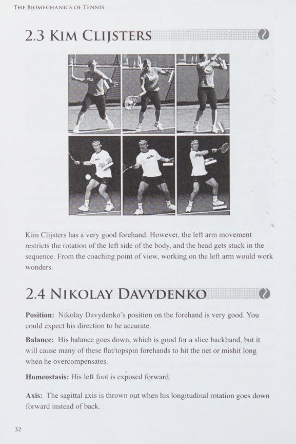
[English: Biomechanical Stroke Profile: 2.6 Roger Federer]
2.6 ROGER FEDERER
Vị trí: Khi phần thân dưới quá 'hướng trực diện' vào mục tiêu, điều đó sẽ khiến việc tiếp xúc dễ dàng hơn và ảnh hưởng một chút đến quá trình chuẩn bị. Nếu bạn định quá thiên vị hoặc quá trực diện, thì quá trực diện sẽ là mặt an toàn hơn của sự hoàn hảo.
Xoáy lên, vì vậy anh ta chỉ cần ngả người về phía sau một chút.
Cân bằng nội môi (homeostasis): Khi kỹ thuật của người chơi là tự nhiên, nó dường như gần như vô hình. Có một cảm giác không nỗ lực, như thể họ không hề cố gắng. Khi có những sai sót đặc trưng, có khả năng hiển thị cao và quan điểm về nỗ lực nhiều hơn và 'cố gắng quá mức'. Mọi người sẽ bị 'thu hút' vào việc sao chép những đặc điểm riêng rất dễ nhận thấy và sẽ bỏ lỡ các thuộc tính của cú thuận tay (forehand) chất lượng cao này. Theo quan điểm cân bằng nội môi (homeostasis), vùng cổ của Federer bị lộ ra nhiều.
Trục: Trong quá trình chuẩn bị thuận tay của Federer, cơ thể xoay ngang, theo chiều kim đồng hồ (khi nhìn từ trên xuống). Anh ấy thực hiện động tác này rất tốt, mặc dù cánh tay trái của anh ấy quay hơi quá xa, điều này hạn chế phần thân trên của anh ấy quay lại khi tiếp xúc. (Xem vị trí của cánh tay trái khi Kết thúc cú đánh.) Trong khi đánh, đầu của anh ta quay theo chiều kim đồng hồ thay vì ngược chiều kim đồng hồ. Điều này không chỉ hạn chế chuyển động của ngực anh ấy khi tiếp xúc mà còn hạn chế khả năng tiếp tục theo dõi bóng và chuyển động của đối thủ. Vị trí đầu và cánh tay trái cũng cản trở việc xoay phía trước.
Federer thực hiện động tác xoay theo trục dọc (longitudinal rotation) một cách hoàn hảo.
Xoay vòng: Federer có khả năng xoay vòng tuyệt vời. Những khuyết điểm ở đầu và cánh tay trái được bù đắp bằng bàn chân phải cực kỳ 'hướng về phía trước' của anh. Đáng buồn thay, hai sai lầm có thể tạo nên một điều đúng và những điểm yếu riêng có thể khắc phục được. Cách lý tưởng nhất là làm cho tất cả các bộ phận hoạt động một cách tự nhiên. Những tay vợt sao chép chuyển động đầu của Federer hầu hết đều nhận kết quả thảm hại vì họ không chú ý đến vị trí bàn chân. Những đặc điểm riêng bị lỗi là dễ bị sao chép nhất vì chúng dễ thấy nhất.
Trình tự: Trong một thế giới lý tưởng, các sợi cơ chồng lên nhau theo hành động giống như sóng đẩy và kéo; tổng hợp các phần. Thứ tự của dòng chảy phải như sau: bụng (gần bệ, mặt đất), ngực trên và cẳng chân trên; mông (gần mặt đất hơn cánh tay trên), cánh tay trên, cẳng chân và cánh tay dưới. Federer có động tác rất tốt ngoại trừ việc đầu, cổ, cơ ngực và cánh tay trái không hỗ trợ động tác một cách trơn tru.
Vùng: Vị trí đầu của anh ấy có nghĩa là điểm tiếp xúc hơi xa về phía trước so với thân. Do đó, cánh tay quá thẳng khi tiếp xúc. Điều này sẽ gây ra một số 'sai sót' và căng cơ.
Xoáy: Federer sử dụng cách cầm vợt 'bán tây', lý tưởng cho những cú đánh 'cao ngang sườn'. Lý tưởng nhất là người chơi nên chuyển sang cách cầm vợt 'tây' hơn để có những cú đánh cao hơn và sang cách cầm vợt 'hướng đông' hoặc 'lục địa' hơn để có những cú Cú thuận tay (forehand) thấp hơn. Federer chủ yếu sử dụng lượng Xoáy lên vừa đủ để giúp đưa bóng xuống sân. Ông sử dụng nguyên tắc 'khoảng cách ngắn nhất giữa hai điểm là một đường thẳng'. Khi áp dụng Xoáy lên và duy trì chuyển động tròn, nhịp nhàng, Mặt vợt nên bắt đầu đóng, mở khi tiếp xúc và đóng lại sau khi tiếp xúc. Federer thực hiện điều này một cách hoàn hảo.
Chấn thương: Tìm kiếm 'điểm nóng' chấn thương liên quan đến việc tìm kiếm các lĩnh vực mâu thuẫn. Cổ, vai và khắp cánh tay phải sẽ là những vùng cần quan tâm.
Huấn luyện: Nguyên tắc này nói rằng, 'Chà, chúng ta bắt đầu khắc phục nó từ đâu?' Điều này đòi hỏi một chút thời gian suy nghĩ để quyết định sự điều chỉnh chính nào sẽ có tác dụng nhiều nhất đối với tất cả các vấn đề còn lại; giống như quân domino đổ xuống. Việc cố định vị trí đầu, điểm tiếp xúc và vị trí cánh tay trái sẽ khiến cú thuận tay (forehand) này trở nên bất khả chiến bại.
David Ferrer: Cán Vợt Cực Tây (Western) & Sự Bù Trừ Nhịp Điệu Phi Thường
2./ DAVID FERRER sien?
Vị trí: Vị trí của David Ferrer thật tuyệt vời.
Cân bằng nội môi (homeostasis): Đầu gối phải và vai phải của anh ấy đang thoát ra khỏi 'không gian' của anh ấy, và cơ thể anh ấy phải làm việc rất nhiều để đưa bên phải của anh ấy quay lại.
Trục: Độ nghiêng thêm về bên phải của Ferrer gây ra một chút lực 'cong vênh' trên trục trước. Điều này làm nghiêng sân một cách hiệu quả, sao cho đường biên bên trái của anh ta ở trên không và đường biên bên phải hướng xuống đất. Điều này có nghĩa là một số cú thuận tay (forehand) Đánh chéo sân (cross-court) sẽ đi quá cao và những cú thuận tay (forehand) ở cuối sân có thể chạm tới lưới.
Xoay: Mặc dù 'nghiêng quá mức', Ferrer vẫn xoay các phần cơ thể của mình cực kỳ tốt.
Trình tự: Cánh tay trái của Ferrer đang cố gắng hết sức để phá vỡ trình tự, nhưng anh ấy làm rất tốt để giữ cho cơ thể chuyển động 'đồng bộ'.
Vùng: Vị trí tiếp xúc rất tốt.
Xoay: Bạn có thể thấy cẳng tay của Ferrer hướng lên trời. Điều này cho thấy cách cầm vợt 'tây', chỉ phù hợp với những cú thuận tay (forehand) cao. Anh ta sẽ bị nghi ngờ với những cú thuận tay (forehand) thấp.
Chấn thương: Cổ tay và khuỷu tay sẽ gặp nguy hiểm vì lực nắm của anh ta.
Huấn luyện: Cú thuận tay rất tốt này chỉ cần một chút trợ giúp để giữ cho cánh tay trái không xoay quá xa về phía sau và quan trọng hơn là ngăn Ferrer thả cánh tay trái xuống. Điều này sẽ làm thẳng cơ thể của anh ấy. Anh ấy cũng cần sáng tạo hơn với một số thay đổi về cách cầm vợt một cách tinh tế.
2.8 RICHARD GASQUET Đối với cú thuận tay (forehand) của Richard Gasquet, tất cả đều tốt. Từ góc độ huấn luyện, tôi khuyến khích anh ấy quên việc xoay cánh tay trái quá xa. Ít hơn là nhiều hơn. Đạt được nhiều sức mạnh hơn bằng cách xoay vòng dưới mức thay vì chơi quá mức.
(Xem video Ferrero trên www.bradlangevad.net để biết cách xoay tối thiểu.)
Richard Gasquet & Fernando Gonzalez: Cú Quất Uy Lực & Áp Lực Vùng Tiếp Xúc
2.9 FERNANDO GONZALEZ Vị trí: Vị trí của anh ấy rất tốt, ngoại trừ việc phải xoay người quá nhiều. gây ra một số phản ứng 'giật đầu gối' để khắc phục nó. Động tác vung vợt về sau quá nhẹ của cánh tay phải cũng khiến bàn chân phải bị lật quá mức.
những chuyên gia hàng đầu có những đặc điểm riêng kém, nhưng nhìn chung họ có những đặc điểm tốt và sự cân bằng dễ dàng là những nguyên tắc chủ đạo.
Cân bằng nội môi (homeostasis): Đầu gối có phần không được bảo vệ, và cánh tay phải kéo Gonzalez 'lùi lại' và sang trái, ra khỏi không gian lý tưởng của anh ấy.
Trục: Tất cả các trục cơ thể của anh ấy đang hoạt động cực kỳ tốt. Tuy nhiên, bạn sẽ không đi bộ xuống phố với tư thế Gập gối sắc nét này, vì vậy trục trước có một chút 'nhảy'.
Xoay người: Vận động viên thể thao có thể di chuyển cơ thể của họ để thoát khỏi 'rắc rối', và phần bên trái của anh ấy thực hiện tốt việc 'thông suốt', mặc dù đã chuẩn bị quá kỹ cho đầu gối và cánh tay phải. Ngay cả đầu của anh ấy cũng chuyển sang một vị trí thỏa đáng.
Trình tự: Có nhiều phân đoạn được yêu cầu làm việc quá sức nhưng kết quả lại rất đáng kể.
Khu vực: Khi bóng đến và bạn biết mình sẽ đánh vào đâu, bạn cần di chuyển phần bên trái của cơ thể và đầu của mình trước, nếu không tốc độ bóng di chuyển vào và ra khỏi khu vực sẽ quá lớn để theo kịp. Khi tiếp xúc, cơ thể bạn cần phải đi trước mục tiêu vì bóng sẽ đuổi kịp bạn. Gonzalez sẽ gặp một số sai lầm khi ở trong khu vực này quá lâu. Các bộ phận cơ thể bên trái cần thoát ra khỏi vùng để các bộ phận bên phải có thể vào vùng. Chỉ cần quan sát đối thủ và quả bóng, nhưng không theo bóng vào khu vực, nếu không bạn sẽ bị mắc kẹt khi nhìn chằm chằm vào một khu vực không gây ảnh hưởng gì đến tác động hoặc vào chính điểm đó.
Xoay: Miễn là Gonzalez thay đổi cách cầm của mình cho các độ cao khác nhau thì không có vấn đề gì ở đây. Anh ấy đóng mở và đóng Mặt vợt của mình một cách tuyệt vời.
Chấn thương: Không có nguy cơ chấn thương lớn ở đây. Về lâu dài, anh ấy có thể chỉ bị một số kích ứng ở đầu gối và cổ tay.
Huấn luyện: Hãy cho anh ấy ý tưởng rằng cố gắng là tốt, nhưng cũng nói với anh ấy rằng đừng trở thành một kẻ 'cố gắng hết sức'. Vận động viên này chỉ cần hiểu việc xoay người quá mức và sự cần thiết phải để chuyển động tự nhiên của mình có độ tin cậy cao hơn.
2.10 JUSTINE HENIN Cú thuận tay của Justine Henin thật tuyệt vời. Cán cân hơi nghiêng xuống, nhưng đó là điều bạn mong đợi từ một cú thuận tay (forehand) cao khi bóng có tầm nhìn toàn cảnh xuống sân.
Justine Henin & Lleyton Hewitt: Cân Bằng Động & Tối Ưu Hóa Cán Cầm
Khu vực: Khi bóng đến và bạn biết mình sẽ đánh vào đâu, bạn cần di chuyển phần bên trái của cơ thể và đầu của mình trước, nếu không tốc độ bóng di chuyển vào và ra khỏi khu vực sẽ quá lớn để theo kịp. Khi tiếp xúc, cơ thể bạn cần phải đi trước mục tiêu vì bóng sẽ đuổi kịp bạn. Gonzalez sẽ gặp một số sai lầm khi ở trong khu vực này quá lâu. Các bộ phận cơ thể bên trái cần thoát ra khỏi vùng để các bộ phận bên phải có thể vào vùng. Chỉ cần quan sát đối thủ và quả bóng, nhưng không theo bóng vào khu vực, nếu không bạn sẽ bị mắc kẹt khi nhìn chằm chằm vào một khu vực không gây ảnh hưởng gì đến tác động hoặc vào chính điểm đó.
Xoay: Miễn là Gonzalez thay đổi cách cầm của mình cho các độ cao khác nhau thì không có vấn đề gì ở đây. Anh ấy đóng mở và đóng Mặt vợt của mình một cách tuyệt vời.
Chấn thương: Ở đây không có nguy cơ chấn thương lớn. Về lâu dài, anh ấy có thể chỉ bị một số kích ứng ở đầu gối và cổ tay.
Huấn luyện: Hãy cho anh ấy ý tưởng rằng cố gắng là tốt, nhưng cũng nói với anh ấy rằng đừng trở thành một kẻ 'cố gắng hết sức'. Vận động viên này chỉ cần hiểu việc xoay người quá mức và sự cần thiết phải để chuyển động tự nhiên của mình có độ tin cậy cao hơn.
2.10 JUSTINE HENIN Cú thuận tay của Justine Henin thật tuyệt vời. Cán cân hơi nghiêng xuống, nhưng đó là điều bạn mong đợi từ một cú thuận tay (forehand) cao khi bóng có tầm nhìn toàn cảnh xuống sân.
Ana Ivanovic: Thói Quen Nhún Đầu Gối Quá Mức & Sự Bất Ổn Cổ Tay
2.11 ANNA IVANOVIC
Vị trí: Vị trí của cô ấy rất tốt, ngoại trừ vị trí bàn chân trái của cô ấy bị tổn hại, khi tiếp xúc và sau đó, do sự xâm nhập của đầu gối trái. vị trí bóng của cô ấy cao hơn. Khả năng giữ Trọng tâm cơ thể của cô ấy rất tốt.
Cân bằng nội môi (homeostasis): Cả hai cổ tay đều cần có 'vé đỗ xe'. Bạn có thể nói rằng bàn tay của cô ấy không liên quan gì đến hình dáng cơ thể và chúng 'chạy trốn'. Do đó, họ không được bảo vệ khỏi không gian được 'phân bổ' cho hành động của cô ấy. Cơ thể có sức mạnh đáng kinh ngạc để bảo vệ 'hệ thống' của nó. Chúng ta có thể thấy một tay di chuyển theo hướng ngược lại như thế nào để tạo ra sự cân bằng mà cơ thể cần để duy trì cấu trúc tổng thể. Đáng buồn thay, hai cái “sai” lại tạo thành một cái “đúng”. Bạn có thể nói rằng đây là cách 'cá nhân' để đạt được 'sự hoàn hảo', nhưng nếu bạn áp dụng quyết định khó khăn, tính cá nhân sẽ được áp dụng tốt hơn với kỹ thuật 'thuần túy' hơn và được thể hiện bằng chiến thuật và lựa chọn cú đánh độc đáo.
Trục: Tất cả các trục cơ thể của cô ấy đang hoạt động cực kỳ tốt. Đầu gối trái của Ivanovic tạo ra một cú va chạm vào tất cả các trục, nhưng sự ổn định của cô ấy khi thi đấu ở cấp độ cao có thể liên quan đến thực tế là có rất nhiều điều tốt về cú thuận tay (forehand) này.
Những vận động viên hàng đầu có thể không hoàn hảo. Tôi đặt những đặc điểm sai lầm của họ vào sự huấn luyện sai lầm, chưa được chứng minh, không được xem xét kỹ lưỡng, đã được 'đánh vào tâm trí họ' và đã hình thành nên niềm tin của họ. Ivanovic có thể đã bị 'cằn nhằn' phải quỳ gối. Bạn có thể dễ dàng truy cập vào góc đầu gối chính xác. Chỉ cần đi bộ xuống phố bạn sẽ thấy đầu gối cong một cách tự nhiên. Bạn sẽ cảm thấy khá ngớ ngẩn nếu bước xuống phố với đôi chân quá thẳng hoặc quá cong.
Xoay: Chúng ta hãy tưởng tượng mức độ xoay hoàn hảo. Điều này là đủ để chuẩn bị cung cấp một lượng tác động và lực lý tưởng, nhưng không quá nhiều, điều này sẽ làm tăng mức độ khó đáp ứng các yêu cầu tinh vi về độ chính xác khi tiếp xúc. Cũng có thể nói rằng 'việc theo dõi' không ảnh hưởng gì đến kết quả vì bóng đã rời khỏi dây. 'Theo dõi' hoàn toàn là một công cụ chẩn đoán tuyệt vời; một phương pháp được sử dụng để nghiên cứu các vấn đề xảy ra trước đó trong hành động.
Chúng ta có thể khám phá sự khác biệt giữa việc xoay nhiều hơn hoàn hảo và kém hoàn hảo. Nếu bạn đã trải qua một quả bóng 'đe dọa', sâu và góc cạnh, đương nhiên bạn sẽ chỉ đánh trả nó một nửa bằng cú thuận tay (forehand) của mình. Vì vậy, chúng tôi có thể nói rằng khi sử dụng ý tưởng 'an toàn là trên hết', bạn sẽ rút ngắn thời gian chuẩn bị cho việc vung vợt ra sau. Do đó, ít xoay hơn là mặt 'an toàn' của sự hoàn hảo. Nếu bạn đã từng cố gắng thực hiện một cú đánh gôn và nhận ra rằng mình 'chẳng đi đến đâu' và không đạt được bất kỳ cảm giác nào về phương hướng, thì bạn có thể hiểu rằng 'xoay vòng quá mức' là mặt nguy hiểm của sự hoàn hảo. Do đó, bạn có thể kết luận rằng việc Cú thuận tay (forehand) 'mềm' có thể mang lại tốc độ và hướng hiệu quả nhất.
Trong trường hợp của Ivanovic, khi bạn 'xoay quá mức' một bộ phận cơ thể, chẳng hạn như bàn tay, bạn luôn tìm thấy sự 'xoay dưới mức' trong pha dứt điểm.
Trình tự: Cẳng tay có dòng chảy hạn chế với các mô của bàn tay.
Vùng: Chuyển động 'thêm' của cổ tay sẽ chuyển thành một điểm tiếp xúc di chuyển quá xa về phía trước. Điều này sẽ dẫn đến một số sai sót và thêm lo lắng khi xu hướng này tái diễn trong suốt trận đấu. Trao cho Ivanovic một cú thuận tay (forehand), đặc biệt là một đường bóng không có tốc độ cao, trong giai đoạn sau của trận đấu, chắc chắn sẽ mắc lỗi.
Xoay: Cổ tay cũng sẽ mang lại nhiều sự không nhất quán về mức độ xoáy tác động lên quả bóng, với những bước nhảy rất lớn trên trục cổ tay. Ivanovic có kiểu cầm vợt phù hợp cho những cú thuận tay (forehand) cao. Nếu cô ấy không để cách cầm vợt 'trượt' về phía cách cầm vợt trái tay hoặc cách cầm vợt thuận tay yếu hơn, thì việc trêu chọc cô ấy bằng những quả bóng thấp, chậm sẽ làm trầm trọng thêm mục đích của cô ấy về độ xoáy và sẽ nâng cao nhu cầu đánh giá của cô ấy.
John McEnroe & Jelena Jankovic: Tiết Giảm Biên Độ & Trực Giác Tự Nhiên
trục 'va chạm'. Những quả bóng chậm sẽ khuyến khích cô ấy tăng khả năng xoay cổ tay - dẫn đến thảm họa.
Chấn thương: Tôi đã đề cập đến cổ tay phải không? Ngoài ra, việc 'xé' đầu gối trái của cô ấy, từ tư thế 'khó xử' sang tư thế 'kính trọng', sẽ làm nặng thêm đầu gối trái của cô ấy.
Huấn luyện: Băng cổ tay của cô ấy thành một góc tù, buộc một miếng băng vào đầu gối trái, đứng nghiêng về bên trái và 'kéo' miếng băng khi cô ấy cố gắng hoạt động quá mức. Đây là một cú thuận tay (forehand) chỉ là một cú 'nhảy, bước và nhảy' từ sự tuyệt vời. Cổ tay có thể kéo đầu gối xung quanh và xuống. Những phân khúc này thường có mối liên hệ phức tạp.
2.12 JOHN MCENROE Đây là một cú thuận tay (forehand) rất tốt. McEnroe có cú đánh về phía sau thấp hơn để bù đắp cho khả năng giữ Trọng tâm cơ thể của anh ấy hơi hướng về phía trước. Khả năng giữ Trọng tâm cơ thể của anh ấy khiến chân trái của anh ấy bị chuột rút khi đáng lẽ phải giữ Trọng tâm cơ thể.
Gael Monfils: Thủ Phạm Đầu Gối Trái & Điểm Nghẽn Vùng Thắt Lưng
2.13 GAEL MONFILS
Vị trí: Tôi đã đánh dấu chân trái bằng màu trắng, để làm nổi bật nó là điểm quan trọng nhất. Tất cả các lỗi liên quan đến cú thuận tay (forehand) của Monfils đều liên quan trực tiếp đến chân trái. Khi đầu gối trái của anh ta quay quá mức xuống và sang phải, bàn chân quay ra khỏi sân và mất vị trí.
và tạo ra sự cân bằng cho phần dưới cơ thể. Bóng sẽ không có ý định rõ ràng về độ cao như mong muốn. Nếu phần thân dưới chiếm giữ thì bóng sẽ phá lưới; nếu phần thân trên chiếm ưu thế thì sẽ có một số quả bóng đi dài.
Cân bằng nội môi (homeostasis): 'Không gian' của anh ấy hơi lệch sang bên phải một chút, nhưng hầu hết các vấn đề đều nằm 'trong' không gian của anh ấy. Bạn có thể nói rằng đôi chân của anh ta bị 'rối', giống như bánh xe bị cong bên dưới một chiếc ô tô đang đỗ; một số bánh xe quá ngắn và một số bánh xe quá dài.
Trục: Tất cả các trục đều bị uốn cong ở thắt lưng.
Xoay: Chân phải phải làm việc quá giờ để vùng hông quay, và việc chân trái không thể xoay và xoay lệch hướng khiến đùi trái bị 'ép lên' vào một tư thế không có ích.
Carlos Moya: Độ Lệch Trục Đứng Ngang (Coronal Tilt) & Động Tác Cổ Tay
Trình tự: Hãy thử bước xuống phố với hình dáng của anh ấy; bạn sẽ cảm thấy rằng bạn không thể thư giãn ở thắt lưng, và đặc biệt là phần thân trên của bạn sẽ gặp khó khăn trong việc 'đung đưa' một cách 'ngầu'. Vòng eo chặn chuỗi các cơ trên khắp cơ thể. Có thể nói eo là người đau khổ và đùi trái là thủ phạm.
Vùng: Sự bất thường về hình dạng khiến Monfils tiếp xúc với bóng quá xa về phía trước và quá xa về bên trái của anh ấy.
Xoay: Kiểu cầm này lý tưởng cho quả bóng có chiều cao này.
Chấn thương: Có thể nói triệu chứng ở thắt lưng và nguyên nhân là do đùi trái xoay quá nhiều. Tôi dự đoán phần lưng dưới của anh ấy sẽ rã rời trước tiên, tiếp theo là đầu gối và khuỷu tay phải.
Huấn luyện: Tôi đã đề cập đến chân trái phải không? 2.14 CARLOS MOYA
Vị trí: Vị trí chân của Moya đã bị tổn hại, chủ yếu là do 'nguyên lý trục' bị cản trở. các vấn đề về 'trục'.
Cân bằng nội môi (homeostasis): 'Không gian' của Moya hơi lệch sang bên phải một chút nhưng cơ thể anh ấy được bảo vệ khá tốt.
Trục: Đây là lĩnh vực chính cần quan tâm. Những điểm bất thường trong cú thuận tay (forehand) rất tốt này đều liên quan đến độ nghiêng quá mức về bên phải của trục vành. Vì vậy, việc xoay trán sang trái là nguyên nhân gây ra mọi vấn đề của anh ấy.
Xoay: Trong quá trình chuẩn bị, có rất nhiều 'trọng lượng' ở phía trên bên phải cơ thể anh ta, do trục vành của anh ta nghiêng thêm. Vì vậy, phần cơ thể này của anh gặp khó khăn trong việc xoay chuyển. Điều này còn được chứng minh bằng việc phần trên bên trái của cơ thể khó “rõ ràng”; ví dụ như tay trái và nửa đầu bên trái của anh ấy.
Trình tự: Một lần nữa, thông qua lỗi trục, có sự gián đoạn trong trình tự ở thắt lưng.
Vùng: Nói chung, điểm tiếp xúc có vị trí và hình dạng tốt. Độ nghiêng của trục có nghĩa là bóng sẽ nghiêng về bên trái và cao, vì vậy Moya có thể nhận thấy rằng một số cú thuận tay (forehand) mà anh ấy hướng Đánh chéo sân (cross-court) sẽ hơi cao và sẽ có hướng kém.
Xoay: Kiểu cầm này lý tưởng cho quả bóng có chiều cao này.
Chấn thương: Có một số nguy hiểm nhẹ ở lưng dưới, đầu gối và mắt cá chân.
Huấn luyện: Tôi đã đề cập đến trục vành chưa?
Andy Murray & Rafael Nadal: Cú Quất Vợt Ngược (Buggy Whip) & Trục Đầu
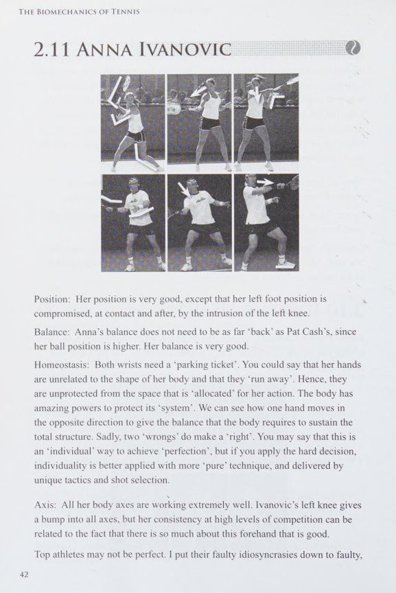
[English: Biomechanical Stroke Profile: 2.15 Andy Murray & 2.16 Rafael Nadal]
2.15 ANDY MURRAY ĐẸP! Từ góc độ huấn luyện tôi sẽ chỉ khuyến khích Andy Murray hạn chế xoay cánh tay trái và đầu gối phải. 2.16 RAFAEL NADAL Cú thuận tay của Rafael Nadal rất tốt. Tôi khuyến khích anh ấy hạn chế quay tay trái. Anh ta cũng nên học cách thả đầu ra khi tiếp xúc và theo bóng vào sân. Anh ta đang bỏ lỡ thời gian để xem đối thủ của mình đang 'làm gì'.
Đầu hiện đang chặn chuyển động quay của ngực và bụng.
Andy Roddick & Marat Safin: Sức Mạnh Bùng Nổ Cơ Ngực & Điều Chỉnh Trục Thân
2.17 ANDY RODDICK Cú thuận tay của Andy Roddick rất tốt. Anh ấy chỉ cần điều chỉnh một chút về vị trí của đầu và cánh tay trái. 2.18 MARAT SAFIN Cú thuận tay của Marat Safin là một trong những cú thuận tay (forehand) đẹp nhất từng xuất hiện trên sân quần vợt. Tôi có đủ can đảm để chỉ trích vị trí đầu của anh ấy không?
IF 6] AR Se AR fr ) om! "37"
Dinara Safina & Robin Soderling: Vấn Đề Tay Nghịch Khi Va Chạm & Độ Thẳng
2.19 DINARA SAFINA Dinara Safina có một cú thuận tay (forehand) tuyệt vời. Lời chỉ trích duy nhất của tôi là về mặt nguyên tắc trình tự, cánh tay trái của cô ấy quay 'ngược lại' khi tiếp xúc.
Chương 4: Cơ Sinh Học Cú Giao Bóng Tốc Độ Cao
Optimal Low-Toss Mechanics, The 135° Tree Pull Principle, and Case Histories of Federer, Roddick, Rusedski, Serena — Khám phá bí mật động lực học cú giao bóng: Tầm ném bóng thấp, cơ chế kéo cành cây 135° và giải phóng lồng ngực
Roger Federer: Sự Thanh Thoát, Ngụy Trang Tuyệt Đối & Khuyết Điểm Cổ Ngửa
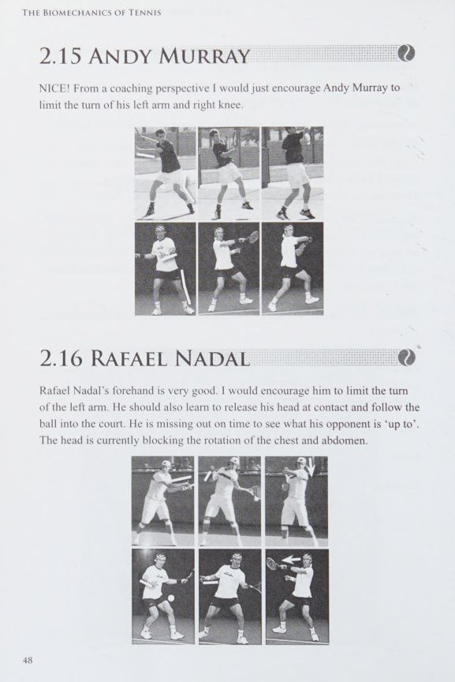
[English: Biomechanical Serve Analysis: 3.4 Roger Federer: Serve]
3.4 ROGER FEDERER: PHỤC VỤ Cú giao bóng của Federer quá 'ngang', đặc biệt là chân trái. Đầu anh ta bị kẹt hướng về phía các ngôi sao sẽ hạn chế sức mạnh và khả năng kiểm soát từ vùng ngực của anh ta.
David Ferrer & Greg Rusedski: Hành Trình Tái Thiết Cú Giao Bóng Kỷ Lục Thế Giới
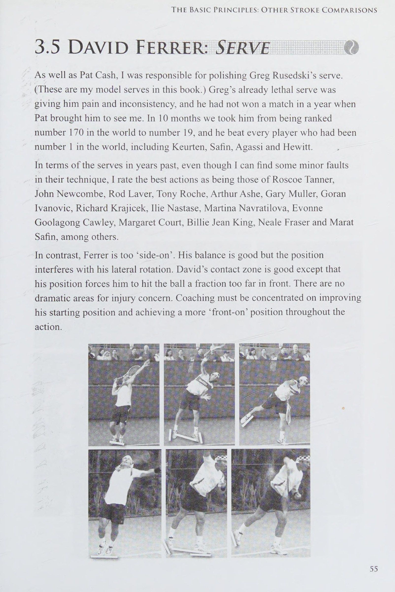
[English: Biomechanical Serve Analysis: 3.5 David Ferrer: Serve & Greg Rusedski Case History]
3.5 DAVID FERRER: PHỤC VỤ Cũng như Pat Cash, tôi chịu trách nhiệm đánh bóng cú giao bóng của Greg Rusedski. (Đây là những cú giao bóng mẫu của tôi trong cuốn sách này.) Cú giao bóng vốn đã nguy hiểm của Greg lại khiến anh ấy đau đớn và thiếu nhất quán, và anh ấy đã không thắng trận nào trong một năm khi Pat đưa anh ấy đến gặp tôi. Trong 10 tháng, chúng tôi đã đưa anh ấy từ vị trí thứ 170 thế giới lên vị trí thứ 19 và anh ấy đã đánh bại mọi tay vợt từng ở vị trí số 1 tôi trên thế giới, bao gồm Keurten, Safin, Agassi và Hewitt.
Xét về những cú giao bóng trong những năm trước, mặc dù tôi có thể tìm thấy một số lỗi nhỏ trong kỹ thuật của họ, tôi đánh giá những hành động tốt nhất là của Roscoe Tanner, John Newcombe, Rod Laver, Tony Roche, Arthur Ashe, Gary Muller, Goran Ivanovic, Richard Krayicek, Ilie Nastase, Martina Navratilova, Evonne Goolagong Cawley, Margaret Court, Billie Jean King, Neale Fraser và Marat Safin, trong số những người khác.
Ngược lại, Ferrer lại quá 'chặt chẽ'. Khả năng giữ Trọng tâm cơ thể của anh ấy tốt nhưng vị trí đó cản trở khả năng xoay ngang của anh ấy. Vùng tiếp xúc của David tốt ngoại trừ vị trí của anh ấy buộc anh ấy phải đánh bóng quá xa về phía trước. Không có khu vực kịch tính nào gây lo ngại về chấn thương. Việc huấn luyện phải tập trung vào việc cải thiện vị trí xuất phát của anh ta và đạt được vị trí 'chính diện' hơn trong suốt hành động.
Rafael Nadal: Cơ Học Cú Giao Bóng Kèo Trái & Tối Ưu Hóa Góc Bàn Chân
Rafael có pha giao bóng rất tốt. Anh ấy chỉ cần tập luyện đôi chân và tư thế đầu. Với hành động hiện tại của anh ấy, là một người thuận tay trái, anh ấy sẽ gặp một số khó khăn trong việc thực hiện cú giao bóng trái tay cho người thuận tay phải một cách chính xác và mạnh mẽ.
Andy Roddick: Động Tác Thu Gọn Đà Đỉnh Cao & Sức Bùng Nổ Cơ Ngực
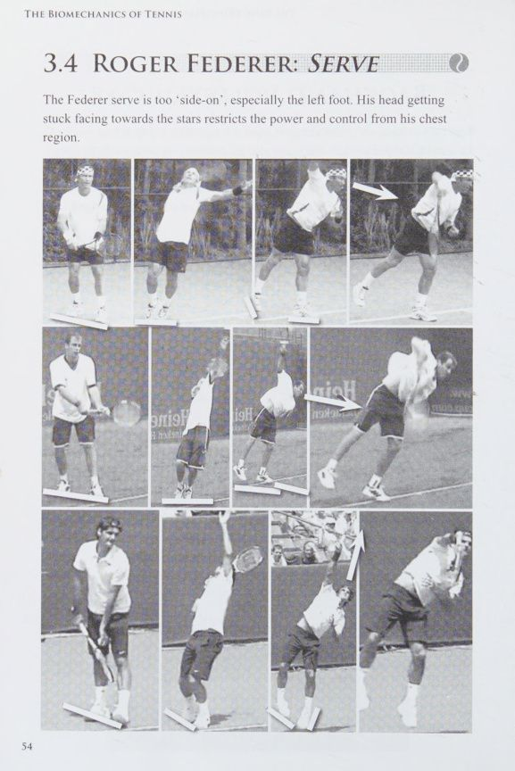
[English: Biomechanical Serve Analysis: 3.11 Andy Roddick: Serve]
3.11 ANDY RODDICK: PHỤC VỤ Đây là một cú giao bóng cực kỳ xuất sắc, nhưng lại quá 'trái chiều' và nhìn lên quá nhiều.
Maria Sharapova: Khủng Hoảng Từ Cú Tung Bóng Quá Cao & Quá Tải Khớp Vai
3.13 MARIA SHARAPOVA:
PHỤC VỤ Sharapova quá 'lạc lõng', nhưng vấn đề chính ở đây là việc Tung bóng cao quá mức. Phải nhìn lên cao để tìm quả bóng có nghĩa là đầu cô ấy đang ở tư thế hướng lên trên rất căng thẳng. Cú ném cũng khuyến khích cô ấy 'uốn cong' đầu gối và nhảy. Hành động nhảy giới hạn chuyển động quay trên tất cả các trục. Việc vươn tay sẽ gây chấn thương vai.
Tại thời điểm này, vì Maria tiếp xúc bóng quá xa phía trước nên tôi muốn truyền lại điều mà tôi tin là kinh nghiệm quý giá có liên quan có thể giúp tôi làm sáng tỏ các vấn đề huấn luyện mà tất cả chúng ta đều gặp phải.
Tôi đã đồng hành cùng Pat Cash tại Sự kiện Champions Tour ở Johannesburg, Nam Phi. Gary Muller, với tư cách là một ngôi sao địa phương, là một người tham gia đặc biệt. Pat gợi ý rằng tôi nên xem hành động của Gary và quay phim nó, vì Gary có một trong những cú giao bóng đáng sợ nhất so với bất kỳ tay vợt nào trong thế hệ của anh ấy. Pat đã tổ chức một buổi luyện tập với Gary, người đã nói với Pat rằng anh ấy cần đánh bóng về phía trước nhiều hơn khi giao bóng. Tôi đã làm việc chăm chỉ để giúp Pat phát triển vị trí cánh tay mạnh mẽ hơn khi giao bóng và đã thúc đẩy anh ấy đánh quả giao bóng ở phía sau nhiều hơn là ở phía trước khi tiếp xúc. Tôi quay cả hai quả giao bóng của họ từ bên cạnh, nơi tôi có thể đánh giá chính xác nhất mối quan hệ của cơ thể khi đánh bóng. Khi tôi phát lại đoạn video, chắc chắn là Gary đã đánh bóng xa hơn Pat khoảng 6 inch về phía sau cơ thể anh ấy. Gary càng tiếp tục khuyến khích Pat đánh xa hơn về phía trước thì Pat giao bóng càng tệ. Tôi quyết định lùi lại một bước, biết rằng sau này khi tôi cho Pat xem đoạn phim, anh ấy sẽ nhận ra lỗi mình mắc phải khi giao bóng. Trước tôi đã dành nhiều năm nghiên cứu về cơ sinh học, tôi đã phạm sai lầm về nhận thức tương tự như Gary, rất nhiều lần.
Thật là thú vị khi tất cả chúng ta đều có thể không nhận thức được mọi thứ. Hãy hết sức cẩn thận với những gì bạn nghe được, đồng thời cũng phải cẩn thận khi đọc những lời khuyên trên các tạp chí được gọi là chuyên gia. Nhận thức không phải là thực tế. Đây chính là nguyên tắc Zone nói chung. Bạn có thể trực tiếp trải nghiệm khái niệm này nếu bạn tìm thấy một cái cây nơi bạn có thể vươn tới một số cành. Cố gắng với tới và bẻ gãy một cành cây, thực hiện động tác bằng tay tương tự như cú giao bóng quần vợt. Bạn sẽ có cảm giác như mình có thể kéo toàn bộ cái cây xuống nếu cánh tay của bạn tạo một góc khoảng 135° và ở phía sau đầu. Bạn sẽ cảm thấy mình yếu đuối nếu thử động tác này với cánh tay duỗi thẳng và cành cây trước mặt.
Tôi chắc chắn tin rằng sẽ vô cùng khó khăn đối với một huấn luyện viên có kinh nghiệm thi đấu đỉnh cao hạn chế, ngay cả khi có chứng chỉ huấn luyện, để đạt được thành công lớn trong công việc huấn luyện. Ngược lại, một số nhà vô địch lại “quá thiên về tay vợt và không đủ vai trò huấn luyện viên”.
Họ có thể chơi rất tốt nhưng không biết tại sao, về mặt kỹ thuật. Đó là tất cả về giải thích.
Jo-Wilfried Tsonga: Sức Bật Bùng Nổ & Sự Khóa Chặt Vùng Thân Trên
3.15 TSONGA JO-WILFRIED:
BACKHAND Tsonga đơn giản là quá 'ở bên'. Ngay cả vị trí đầu và khả năng tiếp xúc của anh ấy cũng sẽ được cải thiện nhờ vào vị trí của anh ấy. 3.16 TSONGA JO-WILFRIED: —
PHỤC VỤ Đây là một hành động rất tốt ngoại trừ việc Jo-Wilfried nên 'tấn công' nhiều hơn. Chuyển động của ngực anh ấy bị cản trở vì anh ấy đang nhìn lên khi ném bóng quá cao. Anh ấy có một trong những hành động giao bóng tốt nhất trong chuyến du đấu hiện tại, nhưng vẫn còn chỗ để cải thiện.
Serena Williams: Cú Giao Bóng Vĩ Đại Nhất Lịch Sử WTA Dưới Góc Nhìn Cơ Học
3.18 SERENA WILLIAMS: PHỤC VỤ Serena Williams quá 'ngang ngửa'. Khả năng xoay người khá tốt dù ở vị trí sớm khi thi đấu là một sự tôn vinh cho khả năng thể thao của cô ấy. Tung bóng quá cao có tác dụng hạn chế chuyển động của ngực cô ấy, vì đầu cô ấy trở nên cứng ngắc hướng lên trời. Sự tiếp xúc được thực hiện quá xa về phía trước và việc chạm quá mức sẽ gây ra chấn thương vai nghiêm trọng. Công việc là cần thiết khi ném và vị trí.
Chương 5: Cơ Sinh Học Cú Trái Tay & Cú Volley
One-Handed vs Two-Handed Backhand Dynamics and Elite Net Volley Principles — So sánh chuyên sâu cú trái một tay và hai tay đỉnh cao, cùng cơ học lên lưới volley không tì vết
Novak Djokovic: Cú Trái Hai Tay & Vấn Đề Đứng Quá Nghiêng Khóa Ngực
NOVAK DJOKOVIC:
BACKHAND Djokovic đơn giản là quá 'ở bên'. Ngay cả vị trí đầu và khả năng tiếp xúc của anh ấy cũng sẽ được cải thiện nhờ vào vị trí của anh ấy. Đây gần như là một bản sao của Cú trái tay (backhand) tay của Tsonga, ngoại trừ vị trí đầu của Novak thậm chí còn hạn chế chuyển động của ngực nhiều hơn. Cổ, lưng dưới và đầu gối phải có nguy cơ bị chấn thương nhưng vùng mắt cá chân/cẳng chân phải sẽ là nơi đầu tiên bị đau.
Roger Federer: Cú Volley Trái Tay & Cú Volley Thuận Tay Tinh Tế
3.2 ROGER FEDERER:
BACKHAND VOLLEY Roger quá 'lệch về'. Sự cân bằng của anh ấy là tốt. Cân bằng nội môi (homeostasis) gọn gàng nhưng anh phải đối mặt với trọng tài. Cánh tay phải quá thẳng và lực tiếp xúc quá xa về phía trước. Vòng quay bị kẹt, đặc biệt là ở cốp xe. Cách cầm bóng thuận tay tốt hơn đối với những cú vô lê thấp, nơi cần thêm lực nâng và độ xoáy. Chấn thương sẽ xảy ra ở cổ, hông và đầu gối phải. Cần phải huấn luyện để mắt và chân có thể theo bóng nhiều hơn.
3.3 ROGER FEDERER:
BÓNG CHUYỆN THUẬN TIỆN Đây là một hành động tuyệt vời.
Richard Gasquet: Biên Độ Vung Cực Đại Của Cú Trái Một Tay & Rủi Ro Cột Sống
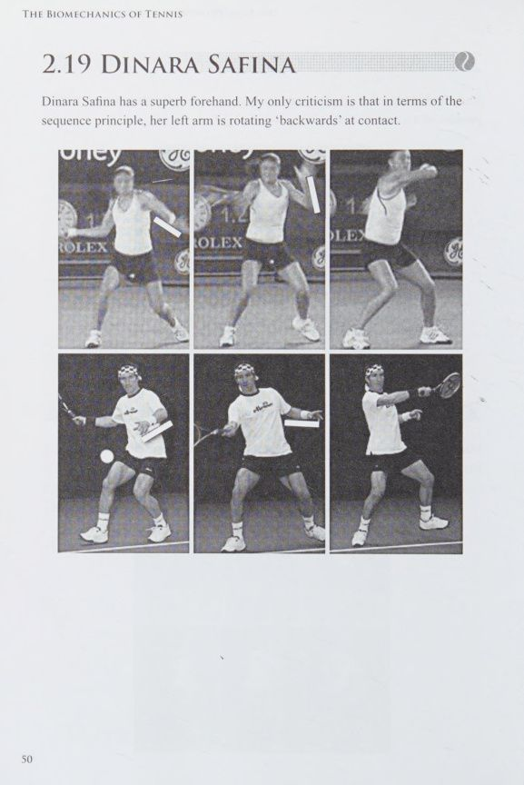
[English: Biomechanical Stroke Profile: 3.6 Richard Gasquet: Backhand]
3.6 KHÍ RICHARD:
BACKHAND Vị trí của Gasquet rất kém. Sự cân bằng thì được, nhưng sự cân bằng nội môi (homeostasis) ở khắp mọi nơi. Liên hệ được thực hiện quá xa ở phía trước. Các trục cực kỳ bị tổn hại. Độ bám ổn nhưng tốt hơn nên sử dụng cho những quả bóng cao hơn. Trình tự dừng lại ở hông. Chấn thương hướng vào đầu gối trái và lưng dưới.
Ai đó huấn luyện Gasquet có thể giải quyết mọi vấn đề của anh ấy bằng cách đặt chân anh ấy vào đúng vị trí. Anh ấy thích đi xuống dòng hơn. Nhưng tôi vẫn thích cú thuận tay (forehand) của anh ấy!
Justine Henin: Nghịch Lý Của Cú Trái Một Tay Huyền Thoại Nhưng Thiếu Cơ Học
3.7 JUSTINE HENIN:
BACKHAND Tôi thấy việc phân tích Cú trái tay (backhand) tay của Justine Henin là một trong những nhiệm vụ đáng lo ngại nhất của tôi. Có những điều thích ở Cú trái tay (backhand) tay của cô ấy; ví dụ như sự cân bằng của cô ấy. Tuy nhiên, tư thế chân, đầu cứng và cánh tay thẳng khi tiếp xúc là điều đáng tiếc.
Các nhà bình luận và dư luận thế giới đánh giá Cú trái tay (backhand) tay này là xuất sắc. Tôi thậm chí không thấy cú đánh này đi dưới cái bóng của những cú thuận tay (forehand), vô lê và chiến thuật thông minh tuyệt vời của Henin.
Vấn đề là tất cả những thứ không có bất kỳ giá trị cơ sinh học nào đều bao gồm quan điểm phổ biến về hình thức trái tay: hướng ra phía trước, nghiêng sang một bên và đầu hướng xuống. Nếu bạn phân tích một số số liệu thống kê về trận đấu, bạn sẽ thấy rằng Henin có ít người chiến thắng hơn và nhiều lỗi ở Cú trái tay (backhand) tay hơn trong suốt trận đấu so với cú thuận tay (forehand).
Rafael Nadal: Cú Trái Hai Tay & Kỹ Thuật Volley Thuận Tay Tuyệt Hảo
3.8 RAFAEL NADAL:
BACKHAND Cú trái tay của Nadal đơn giản là quá 'ngang' và áp lực hướng xuống từ vị trí đầu của anh ấy đã hạn chế khả năng xoay của ngực, 3.9 RAFAEL NADAL:
BÓNG CHUYỆN THUẬN TIỆN Đây là một hành động tuyệt vời.
Marat Safin: Uy Lực Cú Trái Hai Tay, Góc Bàn Chân Phải & Cảnh Báo Khớp Gối
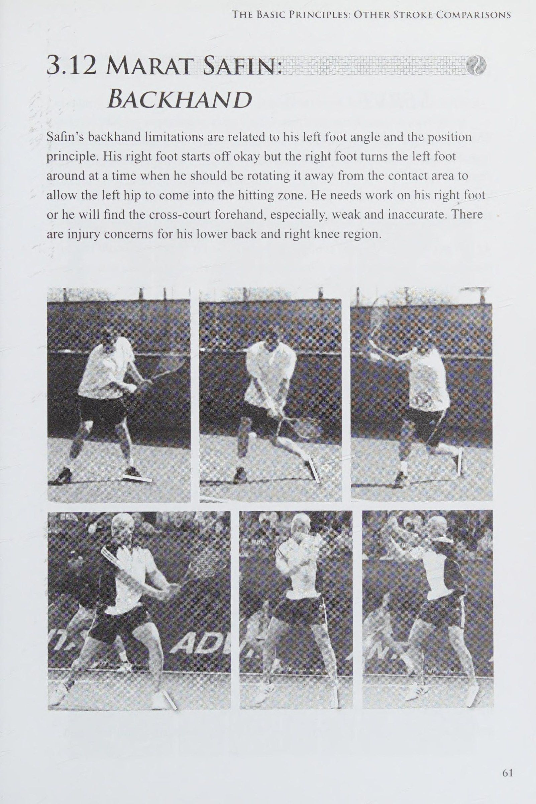
[English: Biomechanical Stroke Profile: 3.12 Marat Safin: Backhand]
3.12 MARAT SAFIN:
BACKHAND Những hạn chế về trái tay của Safin có liên quan đến góc chân trái và nguyên tắc vị trí. Bàn chân phải của anh ấy bắt đầu ổn nhưng bàn chân phải xoay bàn chân trái vào thời điểm mà anh ấy nên xoay nó ra khỏi Vùng đánh bóng lý tưởng để cho hông trái đi vào vùng đánh. Anh ta cần phải hoạt động bằng chân phải nếu không anh ta sẽ nhận thấy cú thuận tay (forehand) Đánh chéo sân (cross-court), đặc biệt là yếu và không chính xác. Có những lo ngại về chấn thương ở vùng lưng dưới và đầu gối phải của anh ấy.
Robin Soderling: Thăng Bằng Cơ Thể & Xu Hướng Đẩy Bóng Trực Diện Lưới
3.14 ROBIN SODERLING:
TRÁI Tay Có một số vấn đề về vị trí ảnh hưởng đến sự tham gia của phần dưới cơ thể của Soderling, thậm chí là một hành động 'chân bồ câu'. Nhưng mối quan tâm hàng đầu của anh ấy là việc anh ấy bù đắp quá mức bằng cánh tay của mình, bóng sẽ bay lên trời. Ngoài ra còn có những lo ngại về chấn thương ở vùng ống chân bên phải của anh ấy.
Jo-Wilfried Tsonga: Cú Trái Cơ Bắp & Sự Hạn Chế Khi Quá Nghiêng Người
3.15 TSONGA JO-WILFRIED:
BACKHAND Tsonga đơn giản là quá 'ở bên'. Ngay cả vị trí đầu và khả năng tiếp xúc của anh ấy cũng sẽ được cải thiện nhờ vào vị trí của anh ấy. 3.16 TSONGA JO-WILFRIED: —
PHỤC VỤ Đây là một hành động rất tốt ngoại trừ việc Jo-Wilfried nên 'tấn công' nhiều hơn. Chuyển động của ngực anh ấy bị cản trở vì anh ấy đang nhìn lên khi ném bóng quá cao. Anh ấy có một trong những hành động giao bóng tốt nhất trong chuyến du đấu hiện tại, nhưng vẫn còn chỗ để cải thiện.
Fernando Verdasco: Cú Volley Thuận Tay & Khoảng Trống Nội Môi Bị Vi Phạm
3.17 FERNANDO VERDASCO:
BÓNG TAY THUẬN TIỆN Vị trí của Verdasco là hợp lý, ngoại trừ việc anh ta đã tắt chân phải, do đó ngăn cản chân phải tham gia vào chuỗi động tác xoay người. Về mặt cân bằng nội môi (homeostasis), có quá nhiều khoảng trống giữa đầu và sự tiếp xúc 'quá xa về phía trước', đặc biệt là vùng ngực; do đó nó ở quá xa toàn bộ cơ thể. Bạn sẽ được tha thứ khi nghĩ rằng anh ấy quan tâm đến khán giả ở sân vận động bên phải anh ấy nhiều hơn là những gì đang diễn ra ở đầu bên kia của sân. Cách cầm vợt thuận tay 'hướng đông' phù hợp với những cú vô lê thuận tay cao, nhưng nó hạn chế tất cả các cú vô lê khác ngoại trừ cú vô lê trái tay thấp.
Điều này đặt ra một câu hỏi thú vị trong nguyên lý quay. Có dễ dàng hơn khi có một tay cầm cho mỗi lần chụp không? KHÔNG! Nếu bạn hiểu rằng tay cầm có thể trượt sang vị trí khác một cách dễ dàng, miễn là bạn biết mình muốn đạt được điều gì, thì việc có vô số tay cầm sẽ đơn giản hơn nhiều. Với số lượng tay cầm vô hạn, bạn có thể thực hiện vô số cú đánh thuần túy từ vô số độ cao khác nhau.
Chương 6: Mô Hình Chuyển Động & Phòng Ngừa Chấn Thương
Biostatistical Modeling, Elimination of Joint Stress Hot-Spots, and Lifelong Career Preservation — Nguyên lý bảo vệ khớp vai, cột sống và giải phẫu góc cổ tay 135° triệt tiêu nguy cơ chấn thương mãn tính
4.1 Quá Trình Phát Triển Mô Hình & Kiểm Chứng Toán Học Vận Động
4.1 SỰ PHÁT TRIỂN |
CỦA MÔ HÌNH Thống kê sinh học là ứng dụng của số liệu thống kê vào sinh học. Nếu quan tâm, bạn có thể nghiên cứu các thuật ngữ sau: Line of Best Fit, Anova, Regression, Multiple Regression, Descartes 3D Tọa độ, Tọa độ hình trụ, Tọa độ cầu. Đây đều là những cách so sánh biến và mô tả bằng hằng.
Ví dụ: Hồi quy bội có thể được biểu thị dưới dạng Y= ax + bx2 + cx3 + dx4, v.v. Nếu bạn muốn ước tính thời gian John rời nhà đi làm vào buổi sáng, bạn có thể có một công thức như: John Leaves (00002400) = axe ngày trong tuần (1-7) + bx mùa (1-4) + cx (thời gian làm việc ngày hôm trước) trong đó a, b, c, d là số thực (ví dụ: 12,765). Có các phương pháp toán thống kê để xác định xác suất công thức là một giả định chính xác. Khi các nhà khoa học ước tính độ tin cậy của các thí nghiệm của họ, họ thường chấp nhận rằng xác suất 90% trở lên là chính xác.
Trong công thức dành cho John có thể có 20 biến, bao gồm d (hôm qua anh ấy mặc chiếc áo màu gì) và e (anh ấy đã dành bao nhiêu thời gian để ăn sáng). Giả sử kết quả có 78% khả năng John sẽ rời nhà lúc 07:00 và nếu chúng ta loại bỏ biến d thì xác suất sẽ không thay đổi. Khi đó chúng ta có thể nói rằng màu áo của anh ấy vào ngày hôm trước không có ảnh hưởng đáng kể đến thời gian anh ấy rời nhà vào buổi sáng. Chúng ta có thể rút ngắn công thức theo cách này. Chúng ta có thể thấy rằng nếu loại bỏ biến e thì xác suất giảm xuống còn 65%. Sau đó, chúng ta có thể giả định rằng thời gian dành cho việc ăn sáng phải được tính đến để đưa ra ước tính quan trọng. Hơn nữa, chúng ta có thể loại bỏ biến quan trọng nhất, chẳng hạn như a, và chuyển nó sang hằng số Y. Khi đó, chúng ta sẽ có công thức sau:
John rời đi vào Thứ Tư = ax1 + bx2, v.v. Chúng ta có thể thấy rằng xác suất vào thứ Tư là 92% và vào những ngày khác là dưới 90%. Sau đó, chúng ta có thể nói rằng rất có thể John sẽ rời đi vào lúc gần 07:00 ngày Thứ Tư, nhưng thời gian khởi hành của anh ấy vào những ngày khác là không thường xuyên nhưng có thể là khá gần với 07:00.
Công thức thống kê sinh học có nhiều công dụng. Ví dụ: bạn có thể muốn xem liệu có bất kỳ biến thể đáng chú ý nào trong 'đường phù hợp nhất' (được mô tả trong đoạn tiếp theo) đối với các góc phân đoạn cơ thể hay không, khi các biến số như chiều cao của người chơi, hình dáng của người chơi (endomorph, mesomor, ectomorph và sự kết hợp của những thứ này), tuổi của người chơi, người chơi, bề mặt giải đấu hoặc thời tiết, cần được xem xét trước khi hoàn thiện các mô hình thỏa mãn các ràng buộc về độ chính xác mong muốn.
Ví dụ: Đường phù hợp nhất có thể được sử dụng trong trường hợp thuận tay, khi tiếp xúc, để coi góc 135 ° là ước tính chính xác nhất về góc cổ tay, khi nhìn từ trên cao. (Xem Hình 4.) Góc cổ tay (từ phía trên) khi tiếp xúc với các cú thuận tay (forehand) Tốt nhất, ví dụ: Agassi Pie cme Discard Kém, ví dụ: Social Playeri Average, ví dụ: Edberg tenis. clave.
Hình 4: Vị trí của cổ tay khi tiếp xúc - thuận tay Những cú thuận tay (forehand) đáng sợ nhất tạo ra các cụm điểm dày đặc ở khoảng 135°. Khi chúng tôi mở rộng sang những cú thuận tay (forehand) kém hơn, sẽ có nhiều biến thể hơn. Chúng ta có thể kết luận rằng 135° là rất gần với vị trí hiệu quả nhất và do đó là vị trí tự nhiên nhất của cổ tay khi tiếp xúc. Đây là khi được nhìn từ một góc duy nhất - phía trên người chơi. Chúng ta phải thực hiện cùng một bài kiểm tra từ phía trước và bên hông. Điều này phải được thực hiện ở tất cả các giai đoạn của hành động và cũng được thực hiện trên tất cả các góc của đoạn: khuỷu tay, đầu gối, v.v. Sau đó chúng tôi có thể tạo ra một mô hình 3D. Bạn có thể tưởng tượng hàng giờ, hàng tháng và hàng năm để phát triển các mô hình trong môn quần vợt và các môn thể thao khác.
Học trò và bạn bè của tôi, Pat Cash, có tài biến đổi mô hình 'android' thành hình dạng con người một cách kỳ diệu. Tôi cho rằng điều này là do lòng quyết tâm mãnh liệt của Pat trong việc hoàn thiện kỹ thuật dễ dàng tự nhiên, khả năng nhận thức kỳ lạ và khả năng điều phối cơ thể kỳ lạ của anh ấy. Chúng tôi đã đổ rất nhiều mồ hôi khi biến khoa học thành nghệ thuật tự nhiên của 'hình người' Pat Cash.
Bảo Vệ Cổ Tay, Khớp Vai Chóp Xoay, Cột Sống Thắt Lưng & Khớp Gối
Chấn thương trong quần vợt không bao giờ xảy ra một cách ngẫu nhiên. Mọi cơn đau mãn tính — từ hội chứng viêm lồi cầu ngoài xương cánh tay (tennis elbow), rách gân cơ chóp xoay (rotator cuff tear), đau thoái hóa cột sống thắt lưng, cho đến viêm gân bánh chè khớp gối — đều là hệ quả trực tiếp của sự 'phân chia mục đích vận động' (division of purpose) giữa các phân đoạn cơ thể.
Khi một bộ phận bị cô lập và buộc phải gánh vác khối lượng công việc vượt quá giới hạn thiết kế sinh học (ví dụ: bẻ gập cổ tay quá mức để tạo xoay thay vì dùng chuyển động xoay thân, hoặc ngửa cổ nhìn chằm chằm theo bóng bổng khi giao bóng khiến các đốt sống cổ bị chèn ép), điểm đó lập tức biến thành một 'điểm nóng chấn thương' (hot-spot). Theo thời gian, phản lực sẽ lan tỏa dọc theo chuỗi xương khớp, tàn phá sự nghiệp của vận động viên.
Mô hình góc cổ tay 135 độ tại điểm tiếp xúc (Position of wrist at contact - Figure 4) chứng minh rằng: khi cổ tay duy trì một góc mở tù tự nhiên khoảng 135 độ, các nhóm cơ cẳng tay và gân bám được bảo vệ trong trạng thái cân bằng nội môi vững chãi nhất. Việc loại bỏ các tư thế cực đoan, kết hợp với nhịp giảm tốc nhịp nhàng trước khi va chạm, chính là chìa khóa vàng giúp kéo dài sự nghiệp thi đấu đỉnh cao thêm hàng chục năm mà hoàn toàn không bị chấn thương quấy rầy.
Tuyên Ngôn Cơ Sinh Học & Giải Đáp Thắc Mắc
Manifesto Against Still-Frame Copying, Debunking 10 Classic Coaching Myths, and Core FAQ — Tuyên ngôn chấm dứt huấn luyện sao chép ảnh tĩnh, vạch trần 10 lầm tưởng kinh điển và giải đáp các khúc mắc trọng yếu
4.2 Tuyên Ngôn: Brad Langevad & Sự Thật Về Cơ Sinh Học Quần Vợt
4.2 TỔNG HỢP:
BRAD LANGEVAD của Robert Shreeve, London, Vương quốc Anh. (Quản lý cũ của Brad) Huyền thoại đang lên đó là Brad Langevad: Huấn luyện thể thao và các phương pháp mới Điền kinh, bơi lội và tất cả các cuộc thi thể thao đều phát triển - các phương pháp và kỹ thuật mới thay thế các phương pháp và kỹ thuật chính thống trong quá khứ và do đó hiệu suất được cải thiện đáng kể.
Trong vài năm qua, các phương pháp huấn luyện thể thao đã tập trung vào: * Hiệu quả hơn * Chính xác hơn * Loại bỏ các chuyển động không cần thiết * Sức mạnh và thể lực tốt hơn * Tránh các chấn thương tốn kém.
Công nghệ đã đẩy nhanh quá trình phát triển này, không chỉ thông qua thiết bị mới, quần áo tốt hơn và thiết kế bề mặt thi đấu được cải tiến mà còn trong việc sử dụng video" và phần mềm hiệu suất để phân tích và nghiên cứu chuyển động. Trong hầu hết các môn thể thao, huấn luyện viên và tay vợt muốn đạt đến đỉnh cao trong nghề nghiệp của họ có xu hướng khao khát kiến thức và áp dụng các phương pháp mới này. Những người đã làm như vậy đã thành công. Mặt khác, một số huấn luyện viên và một số môn thể thao không thể di chuyển theo thời đại, một phần là do sự thiếu hiểu biết và một phần là do các huấn luyện viên, câu lạc bộ và hiệp hội thể thao đã thành lập đã phát triển mạnh dưới thời những hệ thống chính thống thoải mái này không muốn thay đổi. Họ chống lại sự thay đổi và tụt lại phía sau, tạo ra những vận động viên tầm thường và dễ bị chấn thương.
BRAD LANGEVAD & BIOMECHANICS Quần vợt là niềm đam mê chính của Brad và anh ấy đã chơi quần vợt chuyên nghiệp khi còn trẻ. Mặc dù được huấn luyện tốt nhất, một vài cú đánh của anh ấy vẫn khiến anh ấy thất vọng và điều này cũng dẫn đến những chấn thương đau đớn. Brad bắt đầu đặt câu hỏi về cách dạy quần vợt ở các cấp độ huấn luyện cấp cao và trong các hiệp hội huấn luyện chuyên nghiệp cũng như cách quản lý chấn thương.
Sau khi hoàn thành bằng khoa học, Brad bắt đầu khám phá việc sử dụng thống kê sinh học, vật lý và công nghệ máy tính để kiểm tra chuyển động của cơ thể và áp dụng nó cho học viên quần vợt. Rõ ràng là các chuyển động cơ thể xung đột đã hạn chế khả năng hành động trôi chảy của tay vợt và gây ra chấn thương. Những người chơi gôn, vận động viên cricket và những người chơi thể thao khác đều phải chịu đựng.
Để kiểm tra lý thuyết của mình, trong nhiều năm, Brad đã Phân tích video của hàng trăm vận động viên, từ những chuyên gia hàng đầu đến những vận động viên thể thao hàng ngày. Brad nhận thấy rằng những vận động viên hàng đầu có rất nhiều điểm chung, trong khi những vận động viên yếu hơn lại có nhiều điểm chung. Bất chấp những đặc điểm khiến các hành động thành công có vẻ khác nhau, chúng chỉ khác nhau một chút. Tất cả họ đều tuân theo các nguyên tắc cơ sinh học cơ bản giống nhau một cách tự nhiên và thường bất chấp các phương pháp của huấn luyện viên. Để làm phức tạp vấn đề, nhà vô địch thế giới đã có những hành động đẹp và những hành động yếu hơn. Bằng cách đưa ra những con số thống kê cho các hành động và cộng chúng lại, Brad gần như có thể có được thứ hạng thế giới, với những khác biệt nhỏ, được giải thích bằng trí thông minh, chiến thuật và các khía cạnh khác. Qua các cuộc phỏng vấn, anh ấy phát hiện ra rằng những động tác thành công hơn ít được huấn luyện hơn và ví dụ như 'cú thuận tay (forehand) của Agassi' đã lọt qua 'cái bẫy của người hướng dẫn' và phát triển hiệu quả một cách tự nhiên, trong khi 'cú giao bóng yếu hơn của Agassi' đã bị nhấn chìm bởi giáo điều của người hướng dẫn.
Brad nhận ra rằng anh ấy không xác định những hành động để biện minh cho khoa học; thay vào đó, ông sử dụng khoa học để giải thích thiên nhiên là nghệ thuật. Những phát hiện của Brad đã xác định triết lý huấn luyện mà anh ấy đã sử dụng trong 25 năm qua. Anh ấy đang xác định từng hành động hoàn hảo về mặt cơ sinh học; thậm chí cơ bản là đi bộ, ngồi và ngủ. Các mô hình máy tính được phát triển để so sánh khách hàng. Brad đang giúp đỡ nhân viên văn phòng, tài xế, người lao động và thợ làm tóc.
Ngay cả nhân viên giao dịch ngân hàng cũng nhận thấy họ không còn mệt mỏi và hiệu quả thực hiện nhiệm vụ của mình đã tăng lên. Brad cũng được yêu cầu giảng dạy cho các công ty thiết kế giày lớn, chẳng hạn như Adidas.
Mọi hành động trong suốt cuộc đời đều nhất quán một cách đáng kinh ngạc với lý thuyết cơ sinh học mà Brad đang phát triển, nhưng về cơ bản nhất, chúng rất khác với hướng dẫn chính thống thời đó. Ngay cả phương pháp nâng hộp thông thường cũng gây hại. Brad nhận ra rằng khi một bộ phận của cơ thể được kéo dài ra khỏi các bộ phận khác của cơ thể thì sẽ có sự phân chia mục đích và đây chính là vị trí bị thương. Theo thời gian, tổn thương sẽ lan rộng ra khỏi 'điểm nóng' và chính sự tách biệt ban đầu đó là nguồn gốc của vấn đề.
Mặc dù trong 25 năm qua, Brad đã trau dồi sự hiểu biết này và tiếp tục đặt câu hỏi về những quan điểm chính thống cũ, nhưng phương pháp huấn luyện của ông hoàn toàn dựa trên những hiểu biết sâu sắc cơ bản này. Sự thành công của các kỹ thuật của anh khiến nhiều người tin rằng kiến thức chuyên môn và thực tế về cơ sinh học của Brad, đặc biệt là liên quan đến quần vợt, là không gì sánh bằng. Nhà vô địch Wimbledon và cũng là bạn tốt của Brad, Pat Cash, người mà anh đã làm việc cùng anh suốt 20 năm, sử dụng những kỹ thuật này, tin rằng Brad là 'người giỏi nhất thế giới' trong những gì anh làm. Đây là những lời nói tử tế, nhưng kết quả có xu hướng tự nói lên điều đó.
Hàng nghìn từ đã được viết về cơ sinh học và quần vợt nhưng cách tốt nhất để minh họa những điều cơ bản của phương pháp Brad Langevad là vạch trần một số 'con bò thiêng liêng' của huấn luyện quần vợt truyền thống (xem phần 'Thần thoại' bên dưới) và hiểu những điều cơ bản (xem Phần tôi về "Các nguyên tắc cơ bản").
4.3 Giải Mã & Bác Bỏ 10 Lầm Tưởng Kinh Điển Trong Huấn Luyện Quần Vợt
4.3 MYTHS Dưới đây là một số huyền thoại kinh điển làm tổn hại đến sự nghiệp của các tay vợt trẻ, mặc dù có hàng trăm huyền thoại khác tồn tại.
ĐÁNH BÓNG PHÍA TRƯỚC Đánh bóng quá xa về phía trước cơ thể sẽ cô lập bàn tay với phần còn lại của cơ thể và cuối cùng gây thương tích cho toàn bộ cánh tay. Khả năng kiểm soát và hiệu quả cũng bị mất do các phần cơ thể không hoạt động trong phạm vi chu vi tự nhiên của cơ thể. Các xương không thể ngồi ở vị trí tự nhiên và hình dạng này khiến các cơ không thể chồng lên nhau và hợp tác với các cơ lân cận.
DỰ VÀO BÓNG Sự Trọng tâm cơ thể của cơ thể cần phải vuông góc với hướng của lực, nếu không thì tay sẽ phải chịu toàn bộ trách nhiệm kiểm soát độ cao của quả bóng. Nói cách khác, bàn tay có thể điều khiển độ cao tốt hơn nếu nó đi theo quỹ đạo của cánh tay và cánh tay có thể đi theo đường đi nếu khối lượng cơ thể di chuyển xung quanh cùng một đường cao. Người xưa có câu ‘Xương ống chân nối liền với xương đùi’, v.v.
Kỹ thuật tốt khi tiếp xúc có vẻ ngoài tự nhiên là rơi vào không gian như thể đang ở trạng thái nghỉ ngơi, khi hoàn thành cái có và ở điểm bắt đầu của cái không.
HÚT ĐẦU CỦA BẠN Hình dạng của ngực khi tiếp xúc bị chi phối rất nhiều bởi đầu, và nếu đầu hướng xuống thay vì hướng về phía sân thì chiều cao sẽ bị đánh giá sai. Đau cổ cứng có thể dễ dàng được chẩn đoán. Vì bóng đến và rời khỏi vị trí tiếp xúc quá nhanh nên để theo dõi bóng và đối thủ, bạn cần phải đưa đầu quay lại trước bóng, và do đó trí tưởng tượng của bạn phải được sử dụng trong vài giây. Những người chơi nhìn chằm chằm vào quả bóng sẽ nhìn chằm chằm vào khoảng trống mà quả bóng để lại, trong khi đối thủ của họ sẽ giành được điểm. Quần vợt phải được chơi trước để dự đoán "phía trước", giống như cờ vua, và mỗi cú đánh bao gồm sự chuyển đổi thông minh từ tương lai này sang tương lai khác. Trên thực tế, những người chơi bị cuốn vào hiện tại đang bị quá khứ nuốt chửng.
GIỮ MẮT CỦA BẠN TRÊN BÓNG Hạt dẻ già này là chị em song sinh của 'cúi đầu xuống' hoặc 'ngẩng đầu lên'. Trong trường hợp giao bóng, việc ném thấp tối ưu so với cơ thể là rất quan trọng để có thể nhìn thấy bóng. Đối thủ và sân đấu quan trọng hơn nhiều so với những gì lũ chim bồ câu đang làm trên mái nhà. Nếu không, sức mạnh và khả năng kiểm soát từ 'thân cây' sẽ bị mất.
Chơi tốt không phải chỉ là xem bóng; đúng hơn, nó liên quan đến nhận thức ngoại vi về vị trí của bạn, quả bóng ở đâu và đối thủ đang "làm gì". Trên thực tế, điều này thậm chí không phải là quan sát quả bóng, vì quả bóng di chuyển ra khỏi vợt rất nhanh. Bạn cần tin tưởng vào trí tưởng tượng của mình để theo kịp tầm nhìn của quả bóng và đối thủ. Bạn có thể nghĩ về quả bóng chứ không chỉ nhìn thấy nó. Hãy thử nhắm mắt khi tiếp xúc và bạn sẽ thấy rằng không có gì bị mất cả; thực tế là bạn có thể đạt được nhiều thứ. Giống như một đoạn có thể cản trở toàn bộ chuyển động của cơ thể, tầm nhìn có thể hạn chế bạn trí tưởng tượng.
LON NN EEDA
THEO DÕI QUA Khi một người chơi đánh bóng, cơ thể đang quay quanh một số trục, tạo ra nhiều đường hoàng đạo khác nhau, trong đó điểm tiếp xúc chỉ có một điểm cho chính nó trên độ dốc này. Độ dốc hoặc hướng của từng bộ phận cơ thể thay đổi liên tục. Vì vậy, chỉ có một điểm lý tưởng cho độ chính xác hoàn hảo. Đường đi của các đoạn được hướng tới quỹ đạo không thể tránh khỏi của vợt tới quả bóng, và do đó ngay lập tức tránh xa nó. Tại một thời điểm, vợt tiến về phía quả bóng từ một góc và ngay sau khi tiếp xúc, vợt sẽ di chuyển ra xa theo một góc khác. Trên thực tế, bạn cần phải 'chạy trốn' khỏi quả bóng khi đánh.
Mỗi bộ phận cơ thể đều có thời gian riêng và do đó có cảm giác riêng về tương lai. Các bộ phận của cơ thể không thể đồng thời ở điểm tiếp xúc, nếu không chúng ta sẽ bị nuốt chửng vào chính mình. Bất kỳ nỗ lực nào để giữ vợt di chuyển theo hướng bóng sẽ phá hủy cơ thể EVARTTST GF. Có bao nhiêu TET đến ofS)
CỐ GẮNG Ít hơn là nhiều hơn. Khi một bộ phận cơ thể hoạt động quá mức, các bộ phận khác sẽ trở nên vô dụng hơn. Các phân đoạn được sử dụng tốt nhất khi tất cả chúng dường như không làm gì cả vì chúng đều chia sẻ một phần nhỏ của hành động. Nếu không sẽ có thương tích và sức mạnh không được kiểm soát. Kỹ thuật đỉnh cao trông giống như một cú Bật cổ tay, nhưng hiệu ứng uốn cong thực chất là do các đoạn cơ thể liền kề cũng như chính chúng. Cổ tay không quay sấp! Hình dạng uốn cong đơn giản là do tất cả các bộ phận cơ thể cố gắng duy trì chuyển động trong phạm vi được xác định trước.
Người đàn em này, trong hình bên dưới, đã bị nhiều vết thương nặng do cố gắng quá sức. Tim Henman (phải) giao bóng thiếu cú đấm, cũng do cố gắng quá sức.
CHẠY NHANH ĐẾN BÓNG Lời khuyên kinh điển này hoàn toàn là rác rưởi! Cơ thể phải chậm lại tại thời điểm đánh để thực hiện động tác một cách đầy đủ. Nếu bạn di chuyển quá nhanh tới bóng, bạn sẽ vượt qua vị trí thuận lợi và bạn cũng sẽ phải thực hiện nhiều bước hơn để quay trở lại sân. Để chuyển động đến bóng được liên tục, cả khi đánh và khi di chuyển về sân, bạn cần di chuyển đến bóng càng chậm càng tốt. Nếu bạn di chuyển quá nhanh, bạn sẽ có vẻ quá chậm, và bạn sẽ được khuyên nên làm việc theo tốc độ của mình, và sau đó bạn thậm chí còn tỏ ra chậm hơn, v.v. Đừng nhầm lẫn quần vợt với chạy nước rút. Juan Carlos Ferrero là ví dụ về một vận động viên quần vợt chuyên nghiệp quá nhanh và chơi tốt hơn trên Sân Sân đất nện, nơi mà cú 'cú trượt' làm anh ta chậm lại. Những tay vợt bóng đá giống báo như Patrick Vieira tăng tốc qua các khoảng trống dễ dàng hơn bằng cách tối đa hóa chuyển động tối thiểu, giống như những vận động viên quần vợt đề phòng phản ứng tốt hơn khi bỏ bóng. Nếu bóng đánh vào vùng tốt thì bạn có thể đi bộ: rùa thắng!
GIỮ TUYỆT VỜI Chạy về phía trước, lùi lại và sang một bên trong khi thực hiện các cú đánh khác nhau bao gồm nhiều kết hợp xoay 3D khác nhau ở cấp độ bàn chân: gót chân đến ngón chân, ngón chân đến gót chân, từ bước này sang bước khác. Giữa các cú đánh, bàn chân cần giữ ở tư thế trung lập. Bất kỳ chuyển động hoặc chuyển động quay bổ sung nào đều cản trở chuyển động và phản ứng trơn tru; và họ làm người chơi kiệt sức. Đừng nhầm lẫn một trận đấu quần vợt với màn trình diễn Hồ Thiên Nga.
GET BÊN TRÊN Cơ thể chỉ nên xoay đủ xa khỏi mục tiêu để bắt đầu chuyển động xoay, bởi vì cơ thể cần quay trở lại để đối mặt với mục tiêu khi tiếp xúc. Nằm quá nghiêng hoặc cố gắng duy trì tư thế nằm nghiêng sẽ hạn chế khả năng xoay và buộc tay phải chiếm ưu thế. Vết thương lớn sau đó kéo dài đến lưng dưới và đầu gối.
BƯỚC VÀO VÀ LẤY BÓNG ĐÁ
THE RISE Khi bạn bước vào khi đánh bóng, bạn đang kết hợp hai hành động. Di chuyển đến một quả bóng ngắn bao gồm quá trình chuyển đổi suôn sẻ giống như di chuyển sang một bên hoặc lùi lại; di chuyển tới, đánh và di chuyển ra xa được liên kết với nhau như một chuỗi các sự kiện trôi chảy mà không bị chồng chéo quá mức. Hãy thử giao bóng trong khi nhảy trên tấm bạt lò xo hoặc Cú thuận tay (forehand) khi chạy nước rút về phía trước.
Thực sự có một điểm mà quả bóng không bay lên cũng không rơi xuống; thời điểm dễ dàng nhất để đánh bóng. Những người chơi hàng đầu thường xuyên tìm thấy điểm này. Nhưng cách thay thế an toàn nhất để đánh vào điểm hoàn hảo là đánh bóng khi nó bắt đầu rơi. Đánh vào điểm hoàn hảo có vẻ như là đánh lên cao, nhưng thực tế không phải vậy và nó sẽ phá hủy khả năng kiểm soát của bạn nếu bạn cố gắng thực hiện điều này. Sở dĩ cú vô lê một nửa là một cú đánh dễ dàng là vì tại thời điểm bóng chạm đất, nó đứng yên.
Người chơi giỏi để bóng rơi khi không thể đánh trúng điểm lý tưởng. Quần vợt không phải là lao vào đối thủ; đúng hơn, đó là việc đưa bóng vào vị trí đáng sợ nhất, ở khoảng cách ngắn nhất, và vị trí đó thường ở phía sau đối thủ khi họ mắc lỗi tăng tốc ra sân rộng.
HIT HARD Bạn có thể đánh bóng theo chiều dài của một sân bóng đá nếu bạn muốn. Quần vợt có một không gian hạn chế và việc đặt bóng liên quan đến tốc độ cụ thể chứ không phải tốc độ tối đa. Khoảng cách và độ chính xác quan trọng hơn vận tốc.
Hơn nữa, việc cố gắng đánh bóng quá mạnh sẽ làm tăng cú xoay người ra sau đến điểm gãy và cơ thể không thể phục hồi về trạng thái tiếp xúc đối xứng. Đừng nhầm lẫn quần vợt với ném lao. McEnroe đã tạo nên sự nghiệp với lối đánh Cú đánh phẳng và mềm mại với các góc và đường trượt sâu. Những cú ném bóng và bắt volley mà anh ấy luyện tập đã khiến anh ấy trở thành tay vợt xuất sắc nhất thế giới. Hãy hỏi Pat Cash!
Hewitt và Agassi đều bắt tốc độ bóng khi thực hiện các góc ngắn. Lấy một chiếc lá từ cuốn sách chụp ảnh của Sampras; Cú đánh phẳng thấp đánh trực tiếp vào mục tiêu và thấp qua lưới sẽ hiệu quả hơn so với việc đưa bóng cao với lượng Xoáy lên lớn để giữ bóng ở trong, trừ khi bạn đang cố gắng đánh bóng trên một đứa trẻ 8 tuổi. Nói chung, những tay vợt có thứ hạng cao hơn sẽ đánh bóng nhẹ nhàng và trực tiếp hơn. Cần nhiều bộ não hơn cơ bắp.
4.4 Giải Đáp Thắc Mắc (FAQ) & Triết Lý Huấn Luyện Tinh Gọn
4.4 Câu hỏi thường gặp. QO. Còn tính cá nhân thì sao? A. Nếu bạn có một vận động viên bơi tự do ở làn 1, một vận động viên bơi ngửa ở làn 2, một vận động viên bơi bướm ở làn 3 và một vận động viên bơi ếch ở làn 4, thì ai sẽ thắng trên 100 mét? Nếu bạn ở làn 2, 3 hoặc 4 và từ bỏ một số 'cá nhân', tức là tất cả đều bơi tự do, thì chắc chắn kết quả cuộc đua sẽ trở nên khó dự đoán hơn. Bằng cách loại bỏ phần nào một 'cá thể', chúng ta có thể bắt đầu loại bỏ một số cá thể khác. Ví dụ: giả sử người bơi ở làn tôi có kỹ thuật tự nhiên hơn, vậy thì liệu những vận động viên bơi ở làn 2, 3 và 4 có sẵn sàng từ bỏ một số 'cá tính' để 'bỏ học' một phong cách nào đó từ vận động viên bơi ở làn 1 không? Chắc chắn cuộc đua khi đó sẽ càng trở nên thú vị hơn.
Điều gì sẽ xảy ra nếu người bơi ở làn 2 thông minh trong việc tăng tốc khoảng cách và bơi trong làn nước từ làn 3? Chẳng phải cuộc đua sẽ trở nên thú vị hơn nếu các vận động viên bơi ở làn khác học hỏi từ vận động viên bơi ở làn 2 sao? Có thể người bơi ở làn 3 không đủ thông minh để đoán ra người bơi ở làn 2 đang làm gì. Có lẽ người bơi ở làn 4 không được khỏe lắm. Có lẽ vận động viên bơi làn 2 quá thấp và mập. Chúng ta càng đi xa hơn trong quá trình này thì ý tưởng về “tính cá nhân” càng trở nên thú vị hơn. Mang một số sóng vào hồ bơi và chúng ta có 'một trò chơi bóng hoàn toàn mới'.
Là một người đam mê lướt sóng, tôi biết rằng điều kiện lướt sóng thay đổi nhanh chóng cộng với nhu cầu quay đầu để đón sóng sẽ dẫn đến một loạt tình huống khi một số kiểu bơi hữu ích hơn những kiểu bơi khác, nhưng đó là lướt sóng cơ thể! Quần vợt cũng không có gì khác biệt, xét về các cú thuận tay (forehand), trái tay và các cú đánh khác. Người chơi sẽ gặp ít khó khăn hơn khi thay đổi một cú thuận tay (forehand) không đáng tin cậy và gây chấn thương hơn là dừng đánh xuống đường biên thay vì đi Đánh chéo sân (cross-court), hoặc mặc áo xanh thay vì áo trắng. Vì vậy, nếu một huấn luyện viên thuyết giảng về sự tìm kiếm sâu sắc và có ý nghĩa của họ về 'tính cá nhân' của học sinh, thì rất có thể họ đang "bỏ qua", hoặc không đối mặt với thực tế là họ không hiểu đủ về kỹ thuật để biết thế nào là 'tự nhiên'. Và đặc biệt, huấn luyện viên này thường là người nói nhiều nhất sau mỗi cú đánh của học sinh. Thông thường, huấn luyện viên biết nhiều nhất về kỹ thuật và thế nào là 'tự nhiên' sẽ nói ít nhất trong một buổi học vì họ có thể tóm tắt vấn đề một cách hùng hồn.
Về Tác Giả Brad Langevad & Pat Cash
Biography of the leading tennis biomechanist and his revolutionary coaching legacy — Tiểu sử nhà tiên phong cơ sinh học quần vợt và những đóng góp mang tính cách mạng cho thể thao thế giới
Về Tác Giả Brad Langevad: Nhà Khoa Học Tiên Phong Của Quần Vợt Hiện Đại
Brad Langevad, chuyên gia hàng đầu về Cơ sinh học quần vợt, sử dụng kinh nghiệm thực tế nhiều năm và kiến thức khoa học của mình để giải thích cách thức và lý do các tay vợt và huấn luyện viên có thể cải thiện các cú đánh quần vợt và tránh chấn thương. Thông qua các nghiên cứu điển hình về các tay vợt vô địch và bằng cách sử dụng tính năng chụp ảnh chia đôi màn hình, Brad cho thấy mọi cú đánh quần vợt đều có thể được cải thiện tốt hơn như thế nào.
'Brad Langevad, nhà cơ chế sinh học quần vợt hàng đầu thế giới, đã xây dựng lại các trận đấu của Pat Cash, Greg Rusedski và nhiều người nổi tiếng.' Richard Johnson, Sunday Times, tháng 7 năm 2003 sự nghiệp của tôi. Tôi đã học được 'Tôi chỉ ước gì mình biết được những điều này. Tôi có thể nói tất cả những gì tôi có thể nói là sử dụng các nguyên tắc của Brad trong huấn luyện viên của riêng mình!' Pat Cash — Nhà vô địch
ISBN 978-0-b4b-5b83?-4 91'780646!568379 SRS,